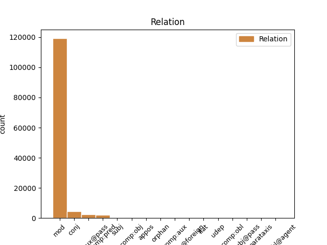
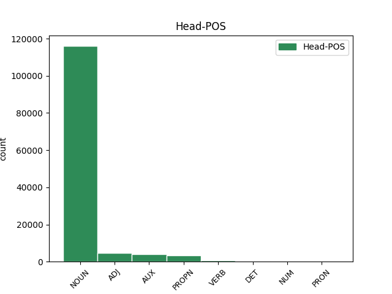
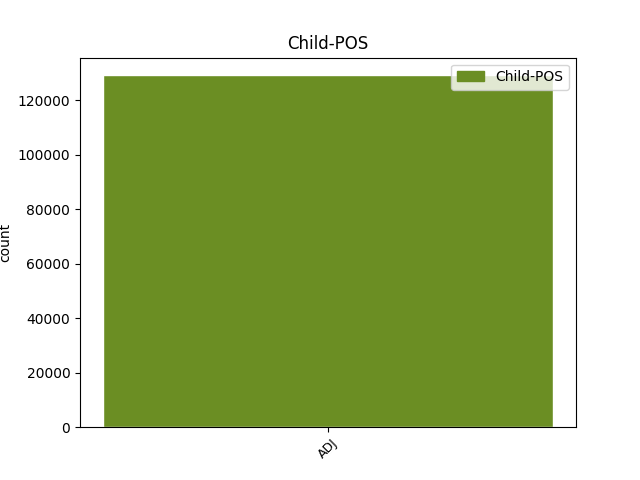

Distribution of features within this leaf



Agreement Rules sorted by frequency.
- When the dependent token is the modifer(mod) of the head token, and the head token is NOUN and the dependent token is ADJ.
1 na _ _ _ _ 0 _ _ _
2 kosmické _ _ _ _ 0 _ _ _
3 střelnici _ _ _ _ 0 _ _ _
4 zvané _ _ _ _ 0 _ _ _
5 sluneční sluneční ADJ AAFS1----1A---- Case=Nom|Degree=Pos|Gender=Fem|Number=Sing|Polarity=Pos 6 mod _ _
6 soustava soustava NOUN NNFS1-----A---- Case=Nom|Gender=Fem|Number=Sing|Polarity=Pos 0 _ _ _
7 to _ _ _ _ 0 _ _ _
8 bude _ _ _ _ 0 _ _ _
9 téměř _ _ _ _ 0 _ _ _
10 jistě _ _ _ _ 0 _ _ _
11 člověk _ _ _ _ 0 _ _ _
12 , _ _ _ _ 0 _ _ _
13 kdo _ _ _ _ 0 _ _ _
14 vytasí _ _ _ _ 0 _ _ _
15 jako _ _ _ _ 0 _ _ _
16 prvý _ _ _ _ 0 _ _ _
17 . _ _ _ _ 0 _ _ _
1 Planetky _ _ _ _ 0 _ _ _
2 mají _ _ _ _ 0 _ _ _
3 obecně _ _ _ _ 0 _ _ _
4 velmi _ _ _ _ 0 _ _ _
5 tmavý _ _ _ _ 0 _ _ _
6 povrch _ _ _ _ 0 _ _ _
7 , _ _ _ _ 0 _ _ _
8 rozptylující rozptylující ADJ AGIS4-----A---- Animacy=Inan|Aspect=Imp|Case=Acc|Gender=Masc|Number=Sing|Polarity=Pos|Tense=Pres|VerbForm=Part|Voice=Act 0 _ _ _
9 a _ _ _ _ 0 _ _ _
10 odrážející odrážející ADJ AGIS4-----A---- Animacy=Inan|Aspect=Imp|Case=Acc|Gender=Masc|Number=Sing|Polarity=Pos|Tense=Pres|VerbForm=Part|Voice=Act 8 conj _ LDeriv=odrážet
11 jen _ _ _ _ 0 _ _ _
12 několik _ _ _ _ 0 _ _ _
13 procent _ _ _ _ 0 _ _ _
14 dopadajícího _ _ _ _ 0 _ _ _
15 slunečního _ _ _ _ 0 _ _ _
16 záření _ _ _ _ 0 _ _ _
17 , _ _ _ _ 0 _ _ _
18 takže _ _ _ _ 0 _ _ _
19 vůbec _ _ _ _ 0 _ _ _
20 nejsou _ _ _ _ 0 _ _ _
21 " _ _ _ _ 0 _ _ _
22 fotogenické _ _ _ _ 0 _ _ _
23 " _ _ _ _ 0 _ _ _
24 . _ _ _ _ 0 _ _ _
1 Mezi _ _ _ _ 0 _ _ _
2 nejúspěšnější _ _ _ _ 0 _ _ _
3 zařízení _ _ _ _ 0 _ _ _
4 tohoto _ _ _ _ 0 _ _ _
5 druhu _ _ _ _ 0 _ _ _
6 patří _ _ _ _ 0 _ _ _
7 Maksutova _ _ _ _ 0 _ _ _
8 komora _ _ _ _ 0 _ _ _
9 na _ _ _ _ 0 _ _ _
10 Kleti _ _ _ _ 0 _ _ _
11 v _ _ _ _ 0 _ _ _
12 jižních jižní ADJ AAFP6----1A---- Case=Loc|Degree=Pos|Gender=Fem|Number=Plur|Polarity=Pos 13 mod _ _
13 Čechách Čechy PROPN NNFP6-----A---- Case=Loc|Gender=Fem|NameType=Geo|Number=Plur|Polarity=Pos 0 _ _ _
14 , _ _ _ _ 0 _ _ _
15 kde _ _ _ _ 0 _ _ _
16 bylo _ _ _ _ 0 _ _ _
17 v _ _ _ _ 0 _ _ _
18 uplynulých _ _ _ _ 0 _ _ _
19 desetiletích _ _ _ _ 0 _ _ _
20 zejména _ _ _ _ 0 _ _ _
21 zásluhou _ _ _ _ 0 _ _ _
22 A _ _ _ _ 0 _ _ _
23 . _ _ _ _ 0 _ _ _
24 Mrkose _ _ _ _ 0 _ _ _
25 objeveno _ _ _ _ 0 _ _ _
26 několik _ _ _ _ 0 _ _ _
27 set _ _ _ _ 0 _ _ _
28 planetek _ _ _ _ 0 _ _ _
29 a _ _ _ _ 0 _ _ _
30 také _ _ _ _ 0 _ _ _
31 několik _ _ _ _ 0 _ _ _
32 komet _ _ _ _ 0 _ _ _
33 . _ _ _ _ 0 _ _ _
1 Mezi _ _ _ _ 0 _ _ _
2 nejúspěšnější _ _ _ _ 0 _ _ _
3 zařízení _ _ _ _ 0 _ _ _
4 tohoto _ _ _ _ 0 _ _ _
5 druhu _ _ _ _ 0 _ _ _
6 patří _ _ _ _ 0 _ _ _
7 Maksutova _ _ _ _ 0 _ _ _
8 komora _ _ _ _ 0 _ _ _
9 na _ _ _ _ 0 _ _ _
10 Kleti _ _ _ _ 0 _ _ _
11 v _ _ _ _ 0 _ _ _
12 jižních _ _ _ _ 0 _ _ _
13 Čechách _ _ _ _ 0 _ _ _
14 , _ _ _ _ 0 _ _ _
15 kde _ _ _ _ 0 _ _ _
16 bylo být AUX VpNS---XR-AA--- Gender=Neut|Number=Sing|Polarity=Pos|Tense=Past|VerbForm=Part|Voice=Act 0 _ _ _
17 v _ _ _ _ 0 _ _ _
18 uplynulých _ _ _ _ 0 _ _ _
19 desetiletích _ _ _ _ 0 _ _ _
20 zejména _ _ _ _ 0 _ _ _
21 zásluhou _ _ _ _ 0 _ _ _
22 A _ _ _ _ 0 _ _ _
23 . _ _ _ _ 0 _ _ _
24 Mrkose _ _ _ _ 0 _ _ _
25 objeveno objevený ADJ VsNS---XX-AP--- Aspect=Perf|Gender=Neut|Number=Sing|Polarity=Pos|Variant=Short|VerbForm=Part|Voice=Pass 16 comp:aux@pass _ LDeriv=objevit
26 několik _ _ _ _ 0 _ _ _
27 set _ _ _ _ 0 _ _ _
28 planetek _ _ _ _ 0 _ _ _
29 a _ _ _ _ 0 _ _ _
30 také _ _ _ _ 0 _ _ _
31 několik _ _ _ _ 0 _ _ _
32 komet _ _ _ _ 0 _ _ _
33 . _ _ _ _ 0 _ _ _
1 K _ _ _ _ 0 _ _ _
2 tomu _ _ _ _ 0 _ _ _
3 by _ _ _ _ 0 _ _ _
4 bylo být AUX VpNS---XR-AA--- Gender=Neut|Number=Sing|Polarity=Pos|Tense=Past|VerbForm=Part|Voice=Act 0 _ _ _
5 nutné nutný ADJ AANS1----1A---- Case=Nom|Degree=Pos|Gender=Neut|Number=Sing|Polarity=Pos 4 comp:pred _ _
6 připravit _ _ _ _ 0 _ _ _
7 do _ _ _ _ 0 _ _ _
8 bojové _ _ _ _ 0 _ _ _
9 pohotovosti _ _ _ _ 0 _ _ _
10 rakety _ _ _ _ 0 _ _ _
11 s _ _ _ _ 0 _ _ _
12 jadernými _ _ _ _ 0 _ _ _
13 hlavicemi _ _ _ _ 0 _ _ _
14 , _ _ _ _ 0 _ _ _
15 jež _ _ _ _ 0 _ _ _
16 by _ _ _ _ 0 _ _ _
17 obíhaly _ _ _ _ 0 _ _ _
18 kolem _ _ _ _ 0 _ _ _
19 Země _ _ _ _ 0 _ _ _
20 a _ _ _ _ 0 _ _ _
21 čekaly _ _ _ _ 0 _ _ _
22 na _ _ _ _ 0 _ _ _
23 svou _ _ _ _ 0 _ _ _
24 příležitost _ _ _ _ 0 _ _ _
25 . _ _ _ _ 0 _ _ _
1 Přítomní přítomný ADJ AAMP1----1A---- Animacy=Anim|Case=Nom|Degree=Pos|Gender=Masc|Number=Plur|Polarity=Pos 2 subj _ _
2 prohlásili prohlásit VERB VpMP---XR-AA--- Animacy=Anim|Aspect=Perf|Gender=Masc|Number=Plur|Polarity=Pos|Tense=Past|VerbForm=Part|Voice=Act 0 _ _ _
3 , _ _ _ _ 0 _ _ _
4 že _ _ _ _ 0 _ _ _
5 kostrou _ _ _ _ 0 _ _ _
6 nikdy _ _ _ _ 0 _ _ _
7 nebylo _ _ _ _ 0 _ _ _
8 pohnuto _ _ _ _ 0 _ _ _
9 . _ _ _ _ 0 _ _ _
1 V _ _ _ _ 0 _ _ _
2 sochách _ _ _ _ 0 _ _ _
3 Nepomukových _ _ _ _ 0 _ _ _
4 se _ _ _ _ 0 _ _ _
5 vrací _ _ _ _ 0 _ _ _
6 duchovní _ _ _ _ 0 _ _ _
7 postava postava NOUN NNFS1-----A---- Case=Nom|Gender=Fem|Number=Sing|Polarity=Pos 0 _ _ _
8 Husova _ _ _ _ 0 _ _ _
9 pročistěná pročistěný ADJ AAFS1----1A---- Case=Nom|Degree=Pos|Gender=Fem|Number=Sing|Polarity=Pos 7 comp:pred _ LDeriv=pročistit
10 utrpením _ _ _ _ 0 _ _ _
11 minulých _ _ _ _ 0 _ _ _
12 staletí _ _ _ _ 0 _ _ _
13 . _ _ _ _ 0 _ _ _
1 Když _ _ _ _ 0 _ _ _
2 si _ _ _ _ 0 _ _ _
3 pak _ _ _ _ 0 _ _ _
4 nechají _ _ _ _ 0 _ _ _
5 svou _ _ _ _ 0 _ _ _
6 " _ _ _ _ 0 _ _ _
7 schovanou _ _ _ _ 0 _ _ _
8 " _ _ _ _ 0 _ _ _
9 krev _ _ _ _ 0 _ _ _
10 před _ _ _ _ 0 _ _ _
11 závodem _ _ _ _ 0 _ _ _
12 vstřiknout _ _ _ _ 0 _ _ _
13 do _ _ _ _ 0 _ _ _
14 žíly _ _ _ _ 0 _ _ _
15 ( _ _ _ _ 0 _ _ _
16 transfúze _ _ _ _ 0 _ _ _
17 ) _ _ _ _ 0 _ _ _
18 , _ _ _ _ 0 _ _ _
19 mají _ _ _ _ 0 _ _ _
20 proti _ _ _ _ 0 _ _ _
21 ostatním _ _ _ _ 0 _ _ _
22 výhodu _ _ _ _ 0 _ _ _
23 : _ _ _ _ 0 _ _ _
24 jejich _ _ _ _ 0 _ _ _
25 krev _ _ _ _ 0 _ _ _
26 je _ _ _ _ 0 _ _ _
27 schopna _ _ _ _ 0 _ _ _
28 přenášet _ _ _ _ 0 _ _ _
29 více _ _ _ _ 0 _ _ _
30 kyslíku _ _ _ _ 0 _ _ _
31 a _ _ _ _ 0 _ _ _
32 umožnit _ _ _ _ 0 _ _ _
33 jim _ _ _ _ 0 _ _ _
34 vyšší _ _ _ _ 0 _ _ _
35 výkon _ _ _ _ 0 _ _ _
36 , _ _ _ _ 0 _ _ _
37 než _ _ _ _ 0 _ _ _
38 jakého _ _ _ _ 0 _ _ _
39 mohou _ _ _ _ 0 _ _ _
40 dosáhnout _ _ _ _ 0 _ _ _
41 ti ten DET PDMP1---------- Animacy=Anim|Case=Nom|Gender=Masc|Number=Plur|PronType=Dem 0 _ _ _
42 poctiví poctivý ADJ AAMP1----1A---- Animacy=Anim|Case=Nom|Degree=Pos|Gender=Masc|Number=Plur|Polarity=Pos 41 mod _ SpaceAfter=No
43 , _ _ _ _ 0 _ _ _
44 co _ _ _ _ 0 _ _ _
45 krevního _ _ _ _ 0 _ _ _
46 dopingu _ _ _ _ 0 _ _ _
47 nepoužili _ _ _ _ 0 _ _ _
48 . _ _ _ _ 0 _ _ _
1 A _ _ _ _ 0 _ _ _
2 přece _ _ _ _ 0 _ _ _
3 jeho _ _ _ _ 0 _ _ _
4 latinský _ _ _ _ 0 _ _ _
5 i _ _ _ _ 0 _ _ _
6 anglický _ _ _ _ 0 _ _ _
7 ( _ _ _ _ 0 _ _ _
8 a _ _ _ _ 0 _ _ _
9 nakonec _ _ _ _ 0 _ _ _
10 i _ _ _ _ 0 _ _ _
11 český _ _ _ _ 0 _ _ _
12 - _ _ _ _ 0 _ _ _
13 nyní _ _ _ _ 0 _ _ _
14 se _ _ _ _ 0 _ _ _
15 doporučuje _ _ _ _ 0 _ _ _
16 říkat _ _ _ _ 0 _ _ _
17 oxidy _ _ _ _ 0 _ _ _
18 , _ _ _ _ 0 _ _ _
19 nikoli _ _ _ _ 0 _ _ _
20 kysličníky _ _ _ _ 0 _ _ _
21 ) _ _ _ _ 0 _ _ _
22 název _ _ _ _ 0 _ _ _
23 pochází _ _ _ _ 0 _ _ _
24 z _ _ _ _ 0 _ _ _
25 řeckého _ _ _ _ 0 _ _ _
26 adjektiva _ _ _ _ 0 _ _ _
27 oxys oxys ADJ AAIS1----1A---- Animacy=Inan|Case=Nom|Degree=Pos|Foreign=Yes|Gender=Masc|Number=Sing|Polarity=Pos 0 _ _ _
28 , _ _ _ _ 0 _ _ _
29 tj _ _ _ _ 0 _ _ _
30 . _ _ _ _ 0 _ _ _
31 ostrý ostrý ADJ AAIS1----1A---- Animacy=Inan|Case=Nom|Degree=Pos|Gender=Masc|Number=Sing|Polarity=Pos 27 appos _ SpaceAfter=No
32 , _ _ _ _ 0 _ _ _
33 kyselý _ _ _ _ 0 _ _ _
34 , _ _ _ _ 0 _ _ _
35 takže _ _ _ _ 0 _ _ _
36 složku _ _ _ _ 0 _ _ _
37 oxy _ _ _ _ 0 _ _ _
38 - _ _ _ _ 0 _ _ _
39 najdeme _ _ _ _ 0 _ _ _
40 i _ _ _ _ 0 _ _ _
41 v _ _ _ _ 0 _ _ _
42 názvu _ _ _ _ 0 _ _ _
43 semen _ _ _ _ 0 _ _ _
44 rostlin _ _ _ _ 0 _ _ _
45 ( _ _ _ _ 0 _ _ _
46 oxykarpní _ _ _ _ 0 _ _ _
47 = _ _ _ _ 0 _ _ _
48 semena _ _ _ _ 0 _ _ _
49 s _ _ _ _ 0 _ _ _
50 ostrou _ _ _ _ 0 _ _ _
51 špičkou _ _ _ _ 0 _ _ _
52 ) _ _ _ _ 0 _ _ _
53 i _ _ _ _ 0 _ _ _
54 v _ _ _ _ 0 _ _ _
55 řečových _ _ _ _ 0 _ _ _
56 figurách _ _ _ _ 0 _ _ _
57 ( _ _ _ _ 0 _ _ _
58 oxymoron _ _ _ _ 0 _ _ _
59 je _ _ _ _ 0 _ _ _
60 spojení _ _ _ _ 0 _ _ _
61 slov _ _ _ _ 0 _ _ _
62 , _ _ _ _ 0 _ _ _
63 která _ _ _ _ 0 _ _ _
64 jsou _ _ _ _ 0 _ _ _
65 v _ _ _ _ 0 _ _ _
66 příkrém _ _ _ _ 0 _ _ _
67 významovém _ _ _ _ 0 _ _ _
68 rozporu _ _ _ _ 0 _ _ _
69 , _ _ _ _ 0 _ _ _
70 např _ _ _ _ 0 _ _ _
71 . _ _ _ _ 0 _ _ _
72 živá _ _ _ _ 0 _ _ _
73 mrtvola _ _ _ _ 0 _ _ _
74 ; _ _ _ _ 0 _ _ _
1 Výpočty _ _ _ _ 0 _ _ _
2 totiž _ _ _ _ 0 _ _ _
3 naznačují _ _ _ _ 0 _ _ _
4 , _ _ _ _ 0 _ _ _
5 že _ _ _ _ 0 _ _ _
6 při _ _ _ _ 0 _ _ _
7 srážce _ _ _ _ 0 _ _ _
8 Země _ _ _ _ 0 _ _ _
9 s _ _ _ _ 0 _ _ _
10 10 _ _ _ _ 0 _ _ _
11 km _ _ _ _ 0 _ _ _
12 planetkou _ _ _ _ 0 _ _ _
13 by _ _ _ _ 0 _ _ _
14 bezprostředně _ _ _ _ 0 _ _ _
15 po _ _ _ _ 0 _ _ _
16 dopadu _ _ _ _ 0 _ _ _
17 zahynula _ _ _ _ 0 _ _ _
18 čtvrtina _ _ _ _ 0 _ _ _
19 lidské _ _ _ _ 0 _ _ _
20 populace _ _ _ _ 0 _ _ _
21 a _ _ _ _ 0 _ _ _
22 zbylí zbylý ADJ AAMP1----1A---- Animacy=Anim|Case=Nom|Degree=Pos|Gender=Masc|Number=Plur|Polarity=Pos 24 mod _ _
23 " _ _ _ _ 0 _ _ _
24 živí živý ADJ AAMP1----1A---- Animacy=Anim|Case=Nom|Degree=Pos|Gender=Masc|Number=Plur|Polarity=Pos 0 _ _ _
25 by _ _ _ _ 0 _ _ _
26 záviděli _ _ _ _ 0 _ _ _
27 mrtvým _ _ _ _ 0 _ _ _
28 " _ _ _ _ 0 _ _ _
29 . _ _ _ _ 0 _ _ _
1 Výpočty _ _ _ _ 0 _ _ _
2 totiž _ _ _ _ 0 _ _ _
3 naznačují _ _ _ _ 0 _ _ _
4 , _ _ _ _ 0 _ _ _
5 že _ _ _ _ 0 _ _ _
6 při _ _ _ _ 0 _ _ _
7 srážce _ _ _ _ 0 _ _ _
8 Země _ _ _ _ 0 _ _ _
9 s _ _ _ _ 0 _ _ _
10 10 _ _ _ _ 0 _ _ _
11 km _ _ _ _ 0 _ _ _
12 planetkou _ _ _ _ 0 _ _ _
13 by _ _ _ _ 0 _ _ _
14 bezprostředně _ _ _ _ 0 _ _ _
15 po _ _ _ _ 0 _ _ _
16 dopadu _ _ _ _ 0 _ _ _
17 zahynula _ _ _ _ 0 _ _ _
18 čtvrtina _ _ _ _ 0 _ _ _
19 lidské _ _ _ _ 0 _ _ _
20 populace _ _ _ _ 0 _ _ _
21 a _ _ _ _ 0 _ _ _
22 zbylí _ _ _ _ 0 _ _ _
23 " _ _ _ _ 0 _ _ _
24 živí _ _ _ _ 0 _ _ _
25 by _ _ _ _ 0 _ _ _
26 záviděli závidět VERB VpMP---XR-AA--- Animacy=Anim|Gender=Masc|Number=Plur|Polarity=Pos|Tense=Past|VerbForm=Part|Voice=Act 0 _ _ _
27 mrtvým mrtvý ADJ AAMP3----1A---- Animacy=Anim|Case=Dat|Degree=Pos|Gender=Masc|Number=Plur|Polarity=Pos 26 comp:obj _ SpaceAfter=No
28 " _ _ _ _ 0 _ _ _
29 . _ _ _ _ 0 _ _ _
1 Ráda rád ADJ ACQW------A---- Gender=Fem,Neut|Number=Plur,Sing|Polarity=Pos|Variant=Short 8 comp:pred _ _
2 bych _ _ _ _ 0 _ _ _
3 se _ _ _ _ 0 _ _ _
4 však _ _ _ _ 0 _ _ _
5 o _ _ _ _ 0 _ _ _
6 celé _ _ _ _ 0 _ _ _
7 věci _ _ _ _ 0 _ _ _
8 dozvěděla dozvědět VERB VpQW---XR-AA--- Gender=Fem,Neut|Number=Plur,Sing|Polarity=Pos|Tense=Past|VerbForm=Part|Voice=Act 0 _ _ _
9 více _ _ _ _ 0 _ _ _
10 , _ _ _ _ 0 _ _ _
11 a _ _ _ _ 0 _ _ _
12 samozřejmě _ _ _ _ 0 _ _ _
13 i _ _ _ _ 0 _ _ _
14 o _ _ _ _ 0 _ _ _
15 samotném _ _ _ _ 0 _ _ _
16 vědci _ _ _ _ 0 _ _ _
17 , _ _ _ _ 0 _ _ _
18 který _ _ _ _ 0 _ _ _
19 prokázal _ _ _ _ 0 _ _ _
20 tak _ _ _ _ 0 _ _ _
21 vysoký _ _ _ _ 0 _ _ _
22 stupeň _ _ _ _ 0 _ _ _
23 odpovědnosti _ _ _ _ 0 _ _ _
24 . _ _ _ _ 0 _ _ _
25 . _ _ _ _ 0 _ _ _
26 . _ _ _ _ 0 _ _ _
1 Téměř _ _ _ _ 0 _ _ _
2 polovina _ _ _ _ 0 _ _ _
3 motýlů _ _ _ _ 0 _ _ _
4 byla _ _ _ _ 0 _ _ _
5 mrtvých _ _ _ _ 0 _ _ _
6 , _ _ _ _ 0 _ _ _
7 další další ADJ AAFS1----1A---- Case=Nom|Degree=Pos|Gender=Fem|Number=Sing|Polarity=Pos 9 mod _ _
8 asi _ _ _ _ 0 _ _ _
9 třetina třetina NUM CyFS1---------- Case=Nom|Gender=Fem|Number=Sing|NumType=Frac 0 _ _ _
10 poškozených _ _ _ _ 0 _ _ _
11 a _ _ _ _ 0 _ _ _
12 jen _ _ _ _ 0 _ _ _
13 17 _ _ _ _ 0 _ _ _
14 % _ _ _ _ 0 _ _ _
15 bylo _ _ _ _ 0 _ _ _
16 schopno _ _ _ _ 0 _ _ _
17 normálního _ _ _ _ 0 _ _ _
18 letu _ _ _ _ 0 _ _ _
19 . _ _ _ _ 0 _ _ _
1 Praktické _ _ _ _ 0 _ _ _
2 využití _ _ _ _ 0 _ _ _
3 metanového _ _ _ _ 0 _ _ _
4 kvašení _ _ _ _ 0 _ _ _
5 : _ _ _ _ 0 _ _ _
6 odpadní _ _ _ _ 0 _ _ _
7 vody _ _ _ _ 0 _ _ _
8 jsou _ _ _ _ 0 _ _ _
9 zkvašovány _ _ _ _ 0 _ _ _
10 , _ _ _ _ 0 _ _ _
11 vznikající _ _ _ _ 0 _ _ _
12 zápalný _ _ _ _ 0 _ _ _
13 plyn plyn NOUN NNIS1-----A---- Animacy=Inan|Case=Nom|Gender=Masc|Number=Sing|Polarity=Pos 0 _ _ _
14 ( _ _ _ _ 0 _ _ _
15 obsahující _ _ _ _ 0 _ _ _
16 převážně _ _ _ _ 0 _ _ _
17 metan _ _ _ _ 0 _ _ _
18 ) _ _ _ _ 0 _ _ _
19 je _ _ _ _ 0 _ _ _
20 zachycován zachycovaný ADJ VsYS---XX-AP--- Aspect=Imp|Gender=Masc|Number=Sing|Polarity=Pos|Variant=Short|VerbForm=Part|Voice=Pass 13 conj _ LDeriv=zachycovat
21 a _ _ _ _ 0 _ _ _
22 použit _ _ _ _ 0 _ _ _
23 jako _ _ _ _ 0 _ _ _
24 svítiplyn _ _ _ _ 0 _ _ _
25 nebo _ _ _ _ 0 _ _ _
26 jako _ _ _ _ 0 _ _ _
27 substrát _ _ _ _ 0 _ _ _
28 pro _ _ _ _ 0 _ _ _
29 růst _ _ _ _ 0 _ _ _
30 dalších _ _ _ _ 0 _ _ _
31 mikroorganismů _ _ _ _ 0 _ _ _
32 , _ _ _ _ 0 _ _ _
33 tzv _ _ _ _ 0 _ _ _
34 . _ _ _ _ 0 _ _ _
35 metanotrofních _ _ _ _ 0 _ _ _
36 baktérií _ _ _ _ 0 _ _ _
37 . _ _ _ _ 0 _ _ _
1 Dne _ _ _ _ 0 _ _ _
2 8 _ _ _ _ 0 _ _ _
3 . _ _ _ _ 0 _ _ _
4 5 _ _ _ _ 0 _ _ _
5 . _ _ _ _ 0 _ _ _
6 1973 _ _ _ _ 0 _ _ _
7 byla být AUX VpQW---XR-AA--- Gender=Fem,Neut|Number=Plur,Sing|Polarity=Pos|Tense=Past|VerbForm=Part|Voice=Act 0 _ _ _
8 vypreparovaná _ _ _ _ 0 _ _ _
9 a _ _ _ _ 0 _ _ _
10 zakonzervovaná _ _ _ _ 0 _ _ _
11 hmota _ _ _ _ 0 _ _ _
12 relikvie _ _ _ _ 0 _ _ _
13 předána předaný ADJ VsQW---XX-AP--- Aspect=Perf|Gender=Fem,Neut|Number=Plur,Sing|Polarity=Pos|Variant=Short|VerbForm=Part|Voice=Pass 7 comp:aux _ LDeriv=předat|LGloss=(někomu_něco)|LId=předaný-3
14 komisionálně _ _ _ _ 0 _ _ _
15 zástupci _ _ _ _ 0 _ _ _
16 Apoštolské _ _ _ _ 0 _ _ _
17 administrativy _ _ _ _ 0 _ _ _
18 a _ _ _ _ 0 _ _ _
19 vložena _ _ _ _ 0 _ _ _
20 zpět _ _ _ _ 0 _ _ _
21 do _ _ _ _ 0 _ _ _
22 zlatého _ _ _ _ 0 _ _ _
23 pouzdra _ _ _ _ 0 _ _ _
24 a _ _ _ _ 0 _ _ _
25 to _ _ _ _ 0 _ _ _
26 vloženo _ _ _ _ 0 _ _ _
27 do _ _ _ _ 0 _ _ _
28 dvou _ _ _ _ 0 _ _ _
29 monstrancí _ _ _ _ 0 _ _ _
30 . _ _ _ _ 0 _ _ _
1 C _ _ _ _ 0 _ _ _
2 . _ _ _ _ 0 _ _ _
3 Bruce _ _ _ _ 0 _ _ _
4 , _ _ _ _ 0 _ _ _
5 C _ _ _ _ 0 _ _ _
6 . _ _ _ _ 0 _ _ _
7 G _ _ _ _ 0 _ _ _
8 . _ _ _ _ 0 _ _ _
9 Gross _ _ _ _ 0 _ _ _
10 , _ _ _ _ 0 _ _ _
11 D _ _ _ _ 0 _ _ _
12 . _ _ _ _ 0 _ _ _
13 I _ _ _ _ 0 _ _ _
14 . _ _ _ _ 0 _ _ _
15 Perrett _ _ _ _ 0 _ _ _
16 , _ _ _ _ 0 _ _ _
17 R R PROPN NNMXX-----A---8 Abbr=Yes|Animacy=Anim|Gender=Masc|NameType=Giv|Polarity=Pos 0 _ _ _
18 . _ _ _ _ 0 _ _ _
19 Desimone _ _ _ _ 0 _ _ _
20 a _ _ _ _ 0 _ _ _
21 mnozí mnohý ADJ AAMP1----1A---- Animacy=Anim|Case=Nom|Degree=Pos|Gender=Masc|Number=Plur|Polarity=Pos 17 conj _ _
22 další _ _ _ _ 0 _ _ _
23 uveřejnili _ _ _ _ 0 _ _ _
24 , _ _ _ _ 0 _ _ _
25 počínaje _ _ _ _ 0 _ _ _
26 r _ _ _ _ 0 _ _ _
27 . _ _ _ _ 0 _ _ _
28 1981 _ _ _ _ 0 _ _ _
29 , _ _ _ _ 0 _ _ _
30 řadu _ _ _ _ 0 _ _ _
31 studií _ _ _ _ 0 _ _ _
32 prokazujících _ _ _ _ 0 _ _ _
33 , _ _ _ _ 0 _ _ _
34 že _ _ _ _ 0 _ _ _
35 ve _ _ _ _ 0 _ _ _
36 spánkovém _ _ _ _ 0 _ _ _
37 laloku _ _ _ _ 0 _ _ _
38 opičího _ _ _ _ 0 _ _ _
39 mozku _ _ _ _ 0 _ _ _
40 jsou _ _ _ _ 0 _ _ _
41 neurony _ _ _ _ 0 _ _ _
42 výběrově _ _ _ _ 0 _ _ _
43 odpovídající _ _ _ _ 0 _ _ _
44 změnou _ _ _ _ 0 _ _ _
45 činnosti _ _ _ _ 0 _ _ _
46 na _ _ _ _ 0 _ _ _
47 opičí _ _ _ _ 0 _ _ _
48 i _ _ _ _ 0 _ _ _
49 lidské _ _ _ _ 0 _ _ _
50 tváře _ _ _ _ 0 _ _ _
51 . _ _ _ _ 0 _ _ _
1 Ale _ _ _ _ 0 _ _ _
2 ti ten DET PDMP1---------- Animacy=Anim|Case=Nom|Gender=Masc|Number=Plur|PronType=Dem 0 _ _ _
3 zastrašeni zastrašený ADJ VsMP---XX-AP--- Animacy=Anim|Aspect=Perf|Gender=Masc|Number=Plur|Polarity=Pos|Variant=Short|VerbForm=Part|Voice=Pass 2 comp:pred _ LDeriv=zastrašit
4 králem _ _ _ _ 0 _ _ _
5 , _ _ _ _ 0 _ _ _
6 až _ _ _ _ 0 _ _ _
7 na _ _ _ _ 0 _ _ _
8 Jana _ _ _ _ 0 _ _ _
9 z _ _ _ _ 0 _ _ _
10 Pomuku _ _ _ _ 0 _ _ _
11 , _ _ _ _ 0 _ _ _
12 dali _ _ _ _ 0 _ _ _
13 sepsat _ _ _ _ 0 _ _ _
14 listinu _ _ _ _ 0 _ _ _
15 veřejnou _ _ _ _ 0 _ _ _
16 , _ _ _ _ 0 _ _ _
17 před _ _ _ _ 0 _ _ _
18 veřejným _ _ _ _ 0 _ _ _
19 notářem _ _ _ _ 0 _ _ _
20 , _ _ _ _ 0 _ _ _
21 že _ _ _ _ 0 _ _ _
22 nic _ _ _ _ 0 _ _ _
23 neřeknou _ _ _ _ 0 _ _ _
24 , _ _ _ _ 0 _ _ _
25 jak _ _ _ _ 0 _ _ _
26 byli _ _ _ _ 0 _ _ _
27 jati _ _ _ _ 0 _ _ _
28 a _ _ _ _ 0 _ _ _
29 mučeni _ _ _ _ 0 _ _ _
30 . _ _ _ _ 0 _ _ _
1 Určování _ _ _ _ 0 _ _ _
2 identity _ _ _ _ 0 _ _ _
3 tváří _ _ _ _ 0 _ _ _
4 aktivovalo _ _ _ _ 0 _ _ _
5 pravostranný _ _ _ _ 0 _ _ _
6 mozkový _ _ _ _ 0 _ _ _
7 závit _ _ _ _ 0 _ _ _
8 gyrus gyrus NOUN NNISX-----A---- Animacy=Inan|Foreign=Yes|Gender=Masc|Number=Sing|Polarity=Pos 0 _ _ _
9 fusiformis fusiformis ADJ AAISX----1A---- Animacy=Inan|Degree=Pos|Foreign=Yes|Gender=Masc|Number=Sing|Polarity=Pos 8 flat@foreign _ SpaceAfter=No
10 , _ _ _ _ 0 _ _ _
11 což _ _ _ _ 0 _ _ _
12 je _ _ _ _ 0 _ _ _
13 hraniční _ _ _ _ 0 _ _ _
14 oblast _ _ _ _ 0 _ _ _
15 mezi _ _ _ _ 0 _ _ _
16 týlním _ _ _ _ 0 _ _ _
17 a _ _ _ _ 0 _ _ _
18 spánkovým _ _ _ _ 0 _ _ _
19 lalokem _ _ _ _ 0 _ _ _
20 , _ _ _ _ 0 _ _ _
21 navazující _ _ _ _ 0 _ _ _
22 na _ _ _ _ 0 _ _ _
23 primární _ _ _ _ 0 _ _ _
24 zrakovou _ _ _ _ 0 _ _ _
25 kůru _ _ _ _ 0 _ _ _
26 . _ _ _ _ 0 _ _ _
1 Jak _ _ _ _ 0 _ _ _
2 už _ _ _ _ 0 _ _ _
3 je _ _ _ _ 0 _ _ _
4 to _ _ _ _ 0 _ _ _
5 pro _ _ _ _ 0 _ _ _
6 dnešek _ _ _ _ 0 _ _ _
7 typické _ _ _ _ 0 _ _ _
8 , _ _ _ _ 0 _ _ _
9 nenavštívilo _ _ _ _ 0 _ _ _
10 ji _ _ _ _ 0 _ _ _
11 mnoho _ _ _ _ 0 _ _ _
12 lidí _ _ _ _ 0 _ _ _
13 , _ _ _ _ 0 _ _ _
14 ale _ _ _ _ 0 _ _ _
15 kdo _ _ _ _ 0 _ _ _
16 přišel _ _ _ _ 0 _ _ _
17 , _ _ _ _ 0 _ _ _
18 zůstal _ _ _ _ 0 _ _ _
19 tam _ _ _ _ 0 _ _ _
20 dlouho _ _ _ _ 0 _ _ _
21 a _ _ _ _ 0 _ _ _
22 nejednou _ _ _ _ 0 _ _ _
23 se _ _ _ _ 0 _ _ _
24 vrátil _ _ _ _ 0 _ _ _
25 - _ _ _ _ 0 _ _ _
26 i _ _ _ _ 0 _ _ _
27 proto _ _ _ _ 0 _ _ _
28 se _ _ _ _ 0 _ _ _
29 vrátil _ _ _ _ 0 _ _ _
30 , _ _ _ _ 0 _ _ _
31 že _ _ _ _ 0 _ _ _
32 Jiří _ _ _ _ 0 _ _ _
33 John _ _ _ _ 0 _ _ _
34 , _ _ _ _ 0 _ _ _
35 vzácný _ _ _ _ 0 _ _ _
36 umělec _ _ _ _ 0 _ _ _
37 a _ _ _ _ 0 _ _ _
38 člověk _ _ _ _ 0 _ _ _
39 , _ _ _ _ 0 _ _ _
40 který _ _ _ _ 0 _ _ _
41 chápal _ _ _ _ 0 _ _ _
42 přírodu _ _ _ _ 0 _ _ _
43 jako _ _ _ _ 0 _ _ _
44 málokdo málokdo PRON PZM-1---------- Animacy=Anim|Case=Nom|Gender=Masc|PronType=Ind 0 _ _ _
45 jiný jiný ADJ AAMS1----1A---- Animacy=Anim|Case=Nom|Degree=Pos|Gender=Masc|Number=Sing|Polarity=Pos 44 mod _ SpaceAfter=No
46 , _ _ _ _ 0 _ _ _
47 zobrazil _ _ _ _ 0 _ _ _
48 ji _ _ _ _ 0 _ _ _
49 moderně _ _ _ _ 0 _ _ _
50 . _ _ _ _ 0 _ _ _
51 ale _ _ _ _ 0 _ _ _
52 bez _ _ _ _ 0 _ _ _
53 křečovitosti _ _ _ _ 0 _ _ _
54 dnes _ _ _ _ 0 _ _ _
55 tak _ _ _ _ 0 _ _ _
56 časté _ _ _ _ 0 _ _ _
57 , _ _ _ _ 0 _ _ _
58 a _ _ _ _ 0 _ _ _
59 nestyděl _ _ _ _ 0 _ _ _
60 se _ _ _ _ 0 _ _ _
61 zdůraznit _ _ _ _ 0 _ _ _
62 , _ _ _ _ 0 _ _ _
63 co _ _ _ _ 0 _ _ _
64 je _ _ _ _ 0 _ _ _
65 v _ _ _ _ 0 _ _ _
66 ní _ _ _ _ 0 _ _ _
67 krásné _ _ _ _ 0 _ _ _
68 . _ _ _ _ 0 _ _ _
1 Chile Chile PROPN NNNXX-----A---- Gender=Neut|NameType=Geo|Polarity=Pos 0 _ _ _
2 se _ _ _ _ 0 _ _ _
3 nakonec _ _ _ _ 0 _ _ _
4 cítilo _ _ _ _ 0 _ _ _
5 povinováno povinovaný ADJ VsNS---XX-AP--- Aspect=Imp|Gender=Neut|Number=Sing|Polarity=Pos|Variant=Short|VerbForm=Part|Voice=Pass 1 comp:pred _ LDeriv=povinovat
6 nenechat _ _ _ _ 0 _ _ _
7 na _ _ _ _ 0 _ _ _
8 sobě _ _ _ _ 0 _ _ _
9 takovou _ _ _ _ 0 _ _ _
10 hanbu _ _ _ _ 0 _ _ _
11 a _ _ _ _ 0 _ _ _
12 rozhodlo _ _ _ _ 0 _ _ _
13 se _ _ _ _ 0 _ _ _
14 po _ _ _ _ 0 _ _ _
15 skončení _ _ _ _ 0 _ _ _
16 výpravy _ _ _ _ 0 _ _ _
17 led _ _ _ _ 0 _ _ _
18 ( _ _ _ _ 0 _ _ _
19 nyní _ _ _ _ 0 _ _ _
20 už _ _ _ _ 0 _ _ _
21 jen _ _ _ _ 0 _ _ _
22 40 _ _ _ _ 0 _ _ _
23 tunový _ _ _ _ 0 _ _ _
24 ) _ _ _ _ 0 _ _ _
25 odvézt _ _ _ _ 0 _ _ _
26 zpátky _ _ _ _ 0 _ _ _
27 do _ _ _ _ 0 _ _ _
28 Antarktidy _ _ _ _ 0 _ _ _
29 . _ _ _ _ 0 _ _ _
1 Očnice _ _ _ _ 0 _ _ _
2 jsou _ _ _ _ 0 _ _ _
3 hranatě _ _ _ _ 0 _ _ _
4 okrouhlé _ _ _ _ 0 _ _ _
5 , _ _ _ _ 0 _ _ _
6 středně _ _ _ _ 0 _ _ _
7 vysoké _ _ _ _ 0 _ _ _
8 , _ _ _ _ 0 _ _ _
9 nos nos NOUN NNIS1-----A---- Animacy=Inan|Case=Nom|Gender=Masc|Number=Sing|Polarity=Pos 0 _ _ _
10 vysoký vysoký ADJ AAIS1----1A---- Animacy=Inan|Case=Nom|Degree=Pos|Gender=Masc|Number=Sing|Polarity=Pos 9 orphan _ _
11 a _ _ _ _ 0 _ _ _
12 úzký _ _ _ _ 0 _ _ _
13 a _ _ _ _ 0 _ _ _
14 jařmové _ _ _ _ 0 _ _ _
15 partie _ _ _ _ 0 _ _ _
16 jsou _ _ _ _ 0 _ _ _
17 jen _ _ _ _ 0 _ _ _
18 slabě _ _ _ _ 0 _ _ _
19 vytvořeny _ _ _ _ 0 _ _ _
20 . _ _ _ _ 0 _ _ _
1 Krebs _ _ _ _ 0 _ _ _
2 začínal _ _ _ _ 0 _ _ _
3 svou _ _ _ _ 0 _ _ _
4 kariéru _ _ _ _ 0 _ _ _
5 v _ _ _ _ 0 _ _ _
6 laboratoři _ _ _ _ 0 _ _ _
7 takových _ _ _ _ 0 _ _ _
8 nositelů _ _ _ _ 0 _ _ _
9 Nobelovy _ _ _ _ 0 _ _ _
10 ceny _ _ _ _ 0 _ _ _
11 z _ _ _ _ 0 _ _ _
12 let _ _ _ _ 0 _ _ _
13 čtyřicátých _ _ _ _ 0 _ _ _
14 ( _ _ _ _ 0 _ _ _
15 1947 _ _ _ _ 0 _ _ _
16 ) _ _ _ _ 0 _ _ _
17 , _ _ _ _ 0 _ _ _
18 jako _ _ _ _ 0 _ _ _
19 byli _ _ _ _ 0 _ _ _
20 manželé manžel NOUN NNMP1-----A---- Animacy=Anim|Case=Nom|Gender=Masc|Number=Plur|Polarity=Pos 0 _ _ _
21 Coriovi Coriův ADJ AUMP1M--------- Animacy=Anim|Case=Nom|Gender=Masc|Gender[psor]=Masc|NameType=Sur|Number=Plur|Poss=Yes 20 flat _ LDeriv=Coria
22 ( _ _ _ _ 0 _ _ _
23 viz _ _ _ _ 0 _ _ _
24 Vesmír _ _ _ _ 0 _ _ _
25 69 _ _ _ _ 0 _ _ _
26 , _ _ _ _ 0 _ _ _
27 476 _ _ _ _ 0 _ _ _
28 , _ _ _ _ 0 _ _ _
29 1990 _ _ _ _ 0 _ _ _
30 ) _ _ _ _ 0 _ _ _
31 . _ _ _ _ 0 _ _ _
1 Ke _ _ _ _ 0 _ _ _
2 slovu _ _ _ _ 0 _ _ _
3 mají _ _ _ _ 0 _ _ _
4 přicházet _ _ _ _ 0 _ _ _
5 všechny všechen DET PLFP1---------- Case=Nom|Gender=Fem|Number=Plur|PronType=Tot 0 _ _ _
6 , _ _ _ _ 0 _ _ _
7 a _ _ _ _ 0 _ _ _
8 to _ _ _ _ 0 _ _ _
9 i _ _ _ _ 0 _ _ _
10 temné temný ADJ AAFP1----1A---- Case=Nom|Degree=Pos|Gender=Fem|Number=Plur|Polarity=Pos 5 conj _ _
11 instinktivní _ _ _ _ 0 _ _ _
12 složky _ _ _ _ 0 _ _ _
13 psychického _ _ _ _ 0 _ _ _
14 života _ _ _ _ 0 _ _ _
15 člověka _ _ _ _ 0 _ _ _
16 . _ _ _ _ 0 _ _ _
17 . _ _ _ _ 0 _ _ _
18 . _ _ _ _ 0 _ _ _
19 . _ _ _ _ 0 _ _ _
1 Některé _ _ _ _ 0 _ _ _
2 skupiny _ _ _ _ 0 _ _ _
3 " _ _ _ _ 0 _ _ _
4 tvářových _ _ _ _ 0 _ _ _
5 " _ _ _ _ 0 _ _ _
6 neuronů _ _ _ _ 0 _ _ _
7 odpovídají _ _ _ _ 0 _ _ _
8 proměnami _ _ _ _ 0 _ _ _
9 činnosti _ _ _ _ 0 _ _ _
10 na _ _ _ _ 0 _ _ _
11 přímý _ _ _ _ 0 _ _ _
12 pohled _ _ _ _ 0 _ _ _
13 na _ _ _ _ 0 _ _ _
14 tvář _ _ _ _ 0 _ _ _
15 , _ _ _ _ 0 _ _ _
16 další další ADJ AAFP1----1A---- Case=Nom|Degree=Pos|Gender=Fem|Number=Plur|Polarity=Pos 0 _ _ _
17 na _ _ _ _ 0 _ _ _
18 její _ _ _ _ 0 _ _ _
19 profil _ _ _ _ 0 _ _ _
20 , _ _ _ _ 0 _ _ _
21 jiné jiný ADJ AAFP1----1A---- Case=Nom|Degree=Pos|Gender=Fem|Number=Plur|Polarity=Pos 16 orphan _ _
22 na _ _ _ _ 0 _ _ _
23 zátylek _ _ _ _ 0 _ _ _
24 nebo _ _ _ _ 0 _ _ _
25 na _ _ _ _ 0 _ _ _
26 zdvižení _ _ _ _ 0 _ _ _
27 či _ _ _ _ 0 _ _ _
28 obrácení _ _ _ _ 0 _ _ _
29 tváře _ _ _ _ 0 _ _ _
30 bradou _ _ _ _ 0 _ _ _
31 dolů _ _ _ _ 0 _ _ _
32 . _ _ _ _ 0 _ _ _
1 Kyslík _ _ _ _ 0 _ _ _
2 byl _ _ _ _ 0 _ _ _
3 kdysi _ _ _ _ 0 _ _ _
4 považován _ _ _ _ 0 _ _ _
5 za _ _ _ _ 0 _ _ _
6 hlavní _ _ _ _ 0 _ _ _
7 složku _ _ _ _ 0 _ _ _
8 při _ _ _ _ 0 _ _ _
9 vzniku _ _ _ _ 0 _ _ _
10 kyselin _ _ _ _ 0 _ _ _
11 , _ _ _ _ 0 _ _ _
12 proto _ _ _ _ 0 _ _ _
13 oxy _ _ _ _ 0 _ _ _
14 - _ _ _ _ 0 _ _ _
15 ( _ _ _ _ 0 _ _ _
16 kyselost _ _ _ _ 0 _ _ _
17 ) _ _ _ _ 0 _ _ _
18 - _ _ _ _ 0 _ _ _
19 gen gen NOUN NNIS1-----A---- Animacy=Inan|Case=Nom|Gender=Masc|Number=Sing|Polarity=Pos 0 _ _ _
20 ( _ _ _ _ 0 _ _ _
21 budící budící ADJ AGIS1-----A---- Animacy=Inan|Aspect=Imp|Case=Nom|Gender=Masc|Number=Sing|Polarity=Pos|Tense=Pres|VerbForm=Part|Voice=Act 19 appos _ LDeriv=budit|SpaceAfter=No
22 ) _ _ _ _ 0 _ _ _
23 . _ _ _ _ 0 _ _ _
1 Husa _ _ _ _ 0 _ _ _
2 na _ _ _ _ 0 _ _ _
3 provázku _ _ _ _ 0 _ _ _
4 mobilizuje _ _ _ _ 0 _ _ _
5 síly _ _ _ _ 0 _ _ _
6 , _ _ _ _ 0 _ _ _
7 aby _ _ _ _ 0 _ _ _
8 by _ _ _ _ 0 _ _ _
9 bez _ _ _ _ 0 _ _ _
10 Vladimíra Vladimír PROPN NNMS2-----A---- Animacy=Anim|Case=Gen|Gender=Masc|NameType=Giv|Number=Sing|Polarity=Pos 0 _ _ _
11 Javorského Javorský ADJ AAMS2----1A---- Animacy=Anim|Case=Gen|Degree=Pos|Gender=Masc|NameType=Sur|Number=Sing|Polarity=Pos 10 flat _ SpaceAfter=No
12 , _ _ _ _ 0 _ _ _
13 který _ _ _ _ 0 _ _ _
14 přijal _ _ _ _ 0 _ _ _
15 angažmá _ _ _ _ 0 _ _ _
16 ve _ _ _ _ 0 _ _ _
17 francouzském _ _ _ _ 0 _ _ _
18 Blois _ _ _ _ 0 _ _ _
19 , _ _ _ _ 0 _ _ _
20 za _ _ _ _ 0 _ _ _
21 provozu _ _ _ _ 0 _ _ _
22 zvládla _ _ _ _ 0 _ _ _
23 přechod _ _ _ _ 0 _ _ _
24 do _ _ _ _ 0 _ _ _
25 vytoužené _ _ _ _ 0 _ _ _
26 budovy _ _ _ _ 0 _ _ _
27 , _ _ _ _ 0 _ _ _
28 jejíž _ _ _ _ 0 _ _ _
29 dokončení _ _ _ _ 0 _ _ _
30 si _ _ _ _ 0 _ _ _
31 vyžádá _ _ _ _ 0 _ _ _
32 ještě _ _ _ _ 0 _ _ _
33 15 _ _ _ _ 0 _ _ _
34 miliónů _ _ _ _ 0 _ _ _
35 Kčs _ _ _ _ 0 _ _ _
36 . _ _ _ _ 0 _ _ _
1 V _ _ _ _ 0 _ _ _
2 porovnání _ _ _ _ 0 _ _ _
3 se _ _ _ _ 0 _ _ _
4 stavem _ _ _ _ 0 _ _ _
5 v _ _ _ _ 0 _ _ _
6 l _ _ _ _ 0 _ _ _
7 . _ _ _ _ 0 _ _ _
8 1970 _ _ _ _ 0 _ _ _
9 a _ _ _ _ 0 _ _ _
10 1980 _ _ _ _ 0 _ _ _
11 si _ _ _ _ 0 _ _ _
12 žádný _ _ _ _ 0 _ _ _
13 okres _ _ _ _ 0 _ _ _
14 ČR _ _ _ _ 0 _ _ _
15 ani _ _ _ _ 0 _ _ _
16 SR _ _ _ _ 0 _ _ _
17 v _ _ _ _ 0 _ _ _
18 r _ _ _ _ 0 _ _ _
19 . _ _ _ _ 0 _ _ _
20 1989 _ _ _ _ 0 _ _ _
21 " _ _ _ _ 0 _ _ _
22 nevylepšil _ _ _ _ 0 _ _ _
23 " _ _ _ _ 0 _ _ _
24 pozici _ _ _ _ 0 _ _ _
25 , _ _ _ _ 0 _ _ _
26 naopak _ _ _ _ 0 _ _ _
27 jeden _ _ _ _ 0 _ _ _
28 český _ _ _ _ 0 _ _ _
29 a _ _ _ _ 0 _ _ _
30 jeden jeden NUM ClYS1---------- Case=Nom|Gender=Masc|Number=Sing|NumForm=Word|NumType=Card|NumValue=1,2,3 0 _ _ _
31 slovenský slovenský ADJ AAIS1----1A---- Animacy=Inan|Case=Nom|Degree=Pos|Gender=Masc|Number=Sing|Polarity=Pos 30 conj _ _
32 si _ _ _ _ 0 _ _ _
33 ji _ _ _ _ 0 _ _ _
34 výrazně _ _ _ _ 0 _ _ _
35 zhoršily _ _ _ _ 0 _ _ _
36 : _ _ _ _ 0 _ _ _
37 Jindřichův _ _ _ _ 0 _ _ _
38 Hradec _ _ _ _ 0 _ _ _
39 a _ _ _ _ 0 _ _ _
40 Spišská _ _ _ _ 0 _ _ _
41 Nová _ _ _ _ 0 _ _ _
42 Ves _ _ _ _ 0 _ _ _
43 . _ _ _ _ 0 _ _ _
1 Z _ _ _ _ 0 _ _ _
2 řady _ _ _ _ 0 _ _ _
3 pozorování _ _ _ _ 0 _ _ _
4 i _ _ _ _ 0 _ _ _
5 měření _ _ _ _ 0 _ _ _
6 ( _ _ _ _ 0 _ _ _
7 např _ _ _ _ 0 _ _ _
8 . _ _ _ _ 0 _ _ _
9 EEG _ _ _ _ 0 _ _ _
10 ) _ _ _ _ 0 _ _ _
11 víme _ _ _ _ 0 _ _ _
12 , _ _ _ _ 0 _ _ _
13 že _ _ _ _ 0 _ _ _
14 procesy _ _ _ _ 0 _ _ _
15 v _ _ _ _ 0 _ _ _
16 mozku _ _ _ _ 0 _ _ _
17 mají _ _ _ _ 0 _ _ _
18 charakter _ _ _ _ 0 _ _ _
19 , _ _ _ _ 0 _ _ _
20 který _ _ _ _ 0 _ _ _
21 bychom _ _ _ _ 0 _ _ _
22 při _ _ _ _ 0 _ _ _
23 prvním _ _ _ _ 0 _ _ _
24 pohledu _ _ _ _ 0 _ _ _
25 nazvali nazvat VERB VpMP---XR-AA--- Animacy=Anim|Gender=Masc|Number=Plur|Polarity=Pos|Tense=Past|VerbForm=Part|Voice=Act 0 _ _ _
26 periodický periodický ADJ AAIS1----1A---- Animacy=Inan|Case=Nom|Degree=Pos|Gender=Masc|Number=Sing|Polarity=Pos 25 comp:obl _ _
27 - _ _ _ _ 0 _ _ _
28 nalézáme _ _ _ _ 0 _ _ _
29 v _ _ _ _ 0 _ _ _
30 nich _ _ _ _ 0 _ _ _
31 různé _ _ _ _ 0 _ _ _
32 typy _ _ _ _ 0 _ _ _
33 oscilací _ _ _ _ 0 _ _ _
34 . _ _ _ _ 0 _ _ _
1 Podobný _ _ _ _ 0 _ _ _
2 proces _ _ _ _ 0 _ _ _
3 proběhne _ _ _ _ 0 _ _ _
4 i _ _ _ _ 0 _ _ _
5 v _ _ _ _ 0 _ _ _
6 dalších _ _ _ _ 0 _ _ _
7 státech _ _ _ _ 0 _ _ _
8 a _ _ _ _ 0 _ _ _
9 nově _ _ _ _ 0 _ _ _
10 zvolení zvolený ADJ AAMP1----1A---- Animacy=Anim|Case=Nom|Degree=Pos|Gender=Masc|Number=Plur|Polarity=Pos 11 udep _ LDeriv=zvolit
11 politikové politik NOUN NNMP1-----A---1 Animacy=Anim|Case=Nom|Gender=Masc|Number=Plur|Polarity=Pos 0 _ _ _
12 uspořádají _ _ _ _ 0 _ _ _
13 nějaký _ _ _ _ 0 _ _ _
14 globální _ _ _ _ 0 _ _ _
15 mítink _ _ _ _ 0 _ _ _
16 , _ _ _ _ 0 _ _ _
17 na _ _ _ _ 0 _ _ _
18 kterém _ _ _ _ 0 _ _ _
19 odsouhlasí _ _ _ _ 0 _ _ _
20 opatření _ _ _ _ 0 _ _ _
21 , _ _ _ _ 0 _ _ _
22 která _ _ _ _ 0 _ _ _
23 potěší _ _ _ _ 0 _ _ _
24 voliče _ _ _ _ 0 _ _ _
25 a _ _ _ _ 0 _ _ _
26 budou _ _ _ _ 0 _ _ _
27 stát _ _ _ _ 0 _ _ _
28 hromadu _ _ _ _ 0 _ _ _
29 peněz _ _ _ _ 0 _ _ _
30 . _ _ _ _ 0 _ _ _
1 Královská _ _ _ _ 0 _ _ _
2 švédská _ _ _ _ 0 _ _ _
3 Akademie _ _ _ _ 0 _ _ _
4 věd _ _ _ _ 0 _ _ _
5 udělila _ _ _ _ 0 _ _ _
6 r _ _ _ _ 0 _ _ _
7 . _ _ _ _ 0 _ _ _
8 1992 _ _ _ _ 0 _ _ _
9 Nobelovu _ _ _ _ 0 _ _ _
10 cenu _ _ _ _ 0 _ _ _
11 za _ _ _ _ 0 _ _ _
12 fyziku _ _ _ _ 0 _ _ _
13 profesoru _ _ _ _ 0 _ _ _
14 Georgesovi _ _ _ _ 0 _ _ _
15 Charpakovi _ _ _ _ 0 _ _ _
16 ( _ _ _ _ 0 _ _ _
17 Francie _ _ _ _ 0 _ _ _
18 ) _ _ _ _ 0 _ _ _
19 , _ _ _ _ 0 _ _ _
20 École École PROPN NNFSX-----A---- Foreign=Yes|Gender=Fem|NameType=Com|Number=Sing|Polarity=Pos 0 _ _ _
21 Supérieure Supérieure ADJ AAFSX----1A---- Degree=Pos|Foreign=Yes|Gender=Fem|NameType=Com|Number=Sing|Polarity=Pos 20 flat@foreign _ _
22 de _ _ _ _ 0 _ _ _
23 Physique _ _ _ _ 0 _ _ _
24 et _ _ _ _ 0 _ _ _
25 Chimie _ _ _ _ 0 _ _ _
26 , _ _ _ _ 0 _ _ _
27 Paříž _ _ _ _ 0 _ _ _
28 , _ _ _ _ 0 _ _ _
29 a _ _ _ _ 0 _ _ _
30 CERN _ _ _ _ 0 _ _ _
31 , _ _ _ _ 0 _ _ _
32 Ženeva _ _ _ _ 0 _ _ _
33 , _ _ _ _ 0 _ _ _
34 Švýcarsko _ _ _ _ 0 _ _ _
35 , _ _ _ _ 0 _ _ _
36 za _ _ _ _ 0 _ _ _
37 vynález _ _ _ _ 0 _ _ _
38 a _ _ _ _ 0 _ _ _
39 vývoj _ _ _ _ 0 _ _ _
40 detektorů _ _ _ _ 0 _ _ _
41 částic _ _ _ _ 0 _ _ _
42 , _ _ _ _ 0 _ _ _
43 zejména _ _ _ _ 0 _ _ _
44 mnohodrátové _ _ _ _ 0 _ _ _
45 proporcionální _ _ _ _ 0 _ _ _
46 komory _ _ _ _ 0 _ _ _
47 . _ _ _ _ 0 _ _ _
1 Německá _ _ _ _ 0 _ _ _
2 křesťanskosociální _ _ _ _ 0 _ _ _
3 strana _ _ _ _ 0 _ _ _
4 lidová _ _ _ _ 0 _ _ _
5 byla _ _ _ _ 0 _ _ _
6 sice _ _ _ _ 0 _ _ _
7 po _ _ _ _ 0 _ _ _
8 parlamentních _ _ _ _ 0 _ _ _
9 volbách _ _ _ _ 0 _ _ _
10 z _ _ _ _ 0 _ _ _
11 roku _ _ _ _ 0 _ _ _
12 1929 _ _ _ _ 0 _ _ _
13 z _ _ _ _ 0 _ _ _
14 vlády _ _ _ _ 0 _ _ _
15 vytlačena _ _ _ _ 0 _ _ _
16 , _ _ _ _ 0 _ _ _
17 lépe _ _ _ _ 0 _ _ _
18 řečeno řečený ADJ VsNS---XX-AP--- Aspect=Perf|Gender=Neut|Number=Sing|Polarity=Pos|Variant=Short|VerbForm=Part|Voice=Pass 19 udep _ LDeriv=říci
19 nezbylo zbýt VERB VpNS---XR-NA--- Gender=Neut|Number=Sing|Polarity=Neg|Tense=Past|VerbForm=Part|Voice=Act 0 _ _ _
20 na _ _ _ _ 0 _ _ _
21 ni _ _ _ _ 0 _ _ _
22 při _ _ _ _ 0 _ _ _
23 stranickopolitických _ _ _ _ 0 _ _ _
24 kombinacích _ _ _ _ 0 _ _ _
25 místo _ _ _ _ 0 _ _ _
26 , _ _ _ _ 0 _ _ _
27 nepřešla _ _ _ _ 0 _ _ _
28 však _ _ _ _ 0 _ _ _
29 zpět _ _ _ _ 0 _ _ _
30 ke _ _ _ _ 0 _ _ _
31 zcela _ _ _ _ 0 _ _ _
32 nepřátelským _ _ _ _ 0 _ _ _
33 postojům _ _ _ _ 0 _ _ _
34 vůči _ _ _ _ 0 _ _ _
35 státu _ _ _ _ 0 _ _ _
36 . _ _ _ _ 0 _ _ _
1 Někteří _ _ _ _ 0 _ _ _
2 badatelé _ _ _ _ 0 _ _ _
3 proto _ _ _ _ 0 _ _ _
4 věřili věřit VERB VpMP---XR-AA--- Animacy=Anim|Aspect=Imp|Gender=Masc|Number=Plur|Polarity=Pos|Tense=Past|VerbForm=Part|Voice=Act 0 _ _ _
5 spíše _ _ _ _ 0 _ _ _
6 na _ _ _ _ 0 _ _ _
7 levostranné _ _ _ _ 0 _ _ _
8 postižení _ _ _ _ 0 _ _ _
9 , _ _ _ _ 0 _ _ _
10 jiní jiný ADJ AAMP1----1A---- Animacy=Anim|Case=Nom|Degree=Pos|Gender=Masc|Number=Plur|Polarity=Pos 4 conj _ _
11 na _ _ _ _ 0 _ _ _
12 opačné _ _ _ _ 0 _ _ _
13 . _ _ _ _ 0 _ _ _
1 Druhý druhý ADJ CrMS1---------- Animacy=Anim|Case=Nom|Gender=Masc|Number=Sing|NumType=Ord 9 subj@pass _ SpaceAfter=No
2 , _ _ _ _ 0 _ _ _
3 27 _ _ _ _ 0 _ _ _
4 letý _ _ _ _ 0 _ _ _
5 muž _ _ _ _ 0 _ _ _
6 z _ _ _ _ 0 _ _ _
7 Mnichova _ _ _ _ 0 _ _ _
8 , _ _ _ _ 0 _ _ _
9 byl být AUX VpYS---XR-AA--- Gender=Masc|Number=Sing|Polarity=Pos|Tense=Past|VerbForm=Part|Voice=Act 0 _ _ _
10 zraněn _ _ _ _ 0 _ _ _
11 jen _ _ _ _ 0 _ _ _
12 lehce _ _ _ _ 0 _ _ _
13 a _ _ _ _ 0 _ _ _
14 z _ _ _ _ 0 _ _ _
15 plzeňské _ _ _ _ 0 _ _ _
16 fakultní _ _ _ _ 0 _ _ _
17 nemocnice _ _ _ _ 0 _ _ _
18 byl _ _ _ _ 0 _ _ _
19 na _ _ _ _ 0 _ _ _
20 vlastní _ _ _ _ 0 _ _ _
21 žádost _ _ _ _ 0 _ _ _
22 propuštěn _ _ _ _ 0 _ _ _
23 . _ _ _ _ 0 _ _ _
1 Kdo kdo PRON PKM-1---------- Animacy=Anim|Case=Nom|Gender=Masc|PronType=Int,Rel 0 _ _ _
2 tasí _ _ _ _ 0 _ _ _
3 první první ADJ CrMS1---------- Animacy=Anim|Case=Nom|Gender=Masc|Number=Sing|NumType=Ord 1 comp:pred _ SpaceAfter=No
4 ? _ _ _ _ 0 _ _ _
1 Trochu _ _ _ _ 0 _ _ _
2 nás _ _ _ _ 0 _ _ _
3 odrazuje _ _ _ _ 0 _ _ _
4 tabule _ _ _ _ 0 _ _ _
5 " _ _ _ _ 0 _ _ _
6 Nepovolaným povolaný ADJ AAMP3----1N---- Animacy=Anim|Case=Dat|Degree=Pos|Gender=Masc|Number=Plur|Polarity=Neg 8 comp:obj _ LDeriv=povolat
7 vstup _ _ _ _ 0 _ _ _
8 zakázán zakázaný ADJ VsYS---XX-AP--- Gender=Masc|Number=Sing|Polarity=Pos|Variant=Short|VerbForm=Part|Voice=Pass 0 _ _ _
9 " _ _ _ _ 0 _ _ _
10 . _ _ _ _ 0 _ _ _
1 První první ADJ CrMS1---------- Animacy=Anim|Case=Nom|Gender=Masc|Number=Sing|NumType=Ord 4 subj _ _
2 z _ _ _ _ 0 _ _ _
3 nich _ _ _ _ 0 _ _ _
4 byl být AUX VpYS---XR-AA--- Gender=Masc|Number=Sing|Polarity=Pos|Tense=Past|VerbForm=Part|Voice=Act 0 _ _ _
5 totiž _ _ _ _ 0 _ _ _
6 původně _ _ _ _ 0 _ _ _
7 - _ _ _ _ 0 _ _ _
8 středoškolským _ _ _ _ 0 _ _ _
9 profesorem _ _ _ _ 0 _ _ _
10 češtiny _ _ _ _ 0 _ _ _
11 a _ _ _ _ 0 _ _ _
12 latiny _ _ _ _ 0 _ _ _
13 . _ _ _ _ 0 _ _ _
1 Rodem _ _ _ _ 0 _ _ _
2 byl _ _ _ _ 0 _ _ _
3 Němec _ _ _ _ 0 _ _ _
4 , _ _ _ _ 0 _ _ _
5 ale _ _ _ _ 0 _ _ _
6 podle _ _ _ _ 0 _ _ _
7 narození _ _ _ _ 0 _ _ _
8 Bohemus Bohemus PROPN NNMS1-----A---- Animacy=Anim|Case=Nom|Gender=Masc|NameType=Nat|Number=Sing|Polarity=Pos 0 _ _ _
9 , _ _ _ _ 0 _ _ _
10 tedy _ _ _ _ 0 _ _ _
11 narozený narozený ADJ AAMS1----1A---- Animacy=Anim|Case=Nom|Degree=Pos|Gender=Masc|Number=Sing|Polarity=Pos 8 appos _ LDeriv=narodit
12 v _ _ _ _ 0 _ _ _
13 Čechách _ _ _ _ 0 _ _ _
14 . _ _ _ _ 0 _ _ _
1 Tyto _ _ _ _ 0 _ _ _
2 vrstvy _ _ _ _ 0 _ _ _
3 , _ _ _ _ 0 _ _ _
4 zvané zvaný ADJ AAFP1----1A---- Case=Nom|Degree=Pos|Gender=Fem|Number=Plur|Polarity=Pos 0 _ _ _
5 Heinrichovy Heinrichův ADJ AUFP1M--------- Case=Nom|Gender=Fem|Gender[psor]=Masc|NameType=Giv|Number=Plur|Poss=Yes 4 udep _ LDeriv=Heinrich|SpaceAfter=No
6 , _ _ _ _ 0 _ _ _
7 se _ _ _ _ 0 _ _ _
8 nápadně _ _ _ _ 0 _ _ _
9 odlišují _ _ _ _ 0 _ _ _
10 od _ _ _ _ 0 _ _ _
11 okolního _ _ _ _ 0 _ _ _
12 souvrství _ _ _ _ 0 _ _ _
13 , _ _ _ _ 0 _ _ _
14 které _ _ _ _ 0 _ _ _
15 je _ _ _ _ 0 _ _ _
16 velmi _ _ _ _ 0 _ _ _
17 jemnozrnné _ _ _ _ 0 _ _ _
18 a _ _ _ _ 0 _ _ _
19 obsahuje _ _ _ _ 0 _ _ _
20 hlavně _ _ _ _ 0 _ _ _
21 křemen _ _ _ _ 0 _ _ _
22 , _ _ _ _ 0 _ _ _
23 živec _ _ _ _ 0 _ _ _
24 a _ _ _ _ 0 _ _ _
25 jílové _ _ _ _ 0 _ _ _
26 minerály _ _ _ _ 0 _ _ _
27 smektitového _ _ _ _ 0 _ _ _
28 typu _ _ _ _ 0 _ _ _
29 , _ _ _ _ 0 _ _ _
30 vznikající _ _ _ _ 0 _ _ _
31 zejména _ _ _ _ 0 _ _ _
32 rozkladem _ _ _ _ 0 _ _ _
33 vulkanického _ _ _ _ 0 _ _ _
34 materiálu _ _ _ _ 0 _ _ _
35 . _ _ _ _ 0 _ _ _
1 Prostě _ _ _ _ 0 _ _ _
2 jsem _ _ _ _ 0 _ _ _
3 najednou _ _ _ _ 0 _ _ _
4 zjistil _ _ _ _ 0 _ _ _
5 , _ _ _ _ 0 _ _ _
6 že _ _ _ _ 0 _ _ _
7 ryby _ _ _ _ 0 _ _ _
8 , _ _ _ _ 0 _ _ _
9 které _ _ _ _ 0 _ _ _
10 nacházím _ _ _ _ 0 _ _ _
11 pod _ _ _ _ 0 _ _ _
12 kameny _ _ _ _ 0 _ _ _
13 , _ _ _ _ 0 _ _ _
14 už _ _ _ _ 0 _ _ _
15 nejsou _ _ _ _ 0 _ _ _
16 vranky _ _ _ _ 0 _ _ _
17 obecné _ _ _ _ 0 _ _ _
18 , _ _ _ _ 0 _ _ _
19 ale _ _ _ _ 0 _ _ _
20 ty ten DET PDFP1---------- Case=Nom|Gender=Fem|Number=Plur|PronType=Dem 0 _ _ _
21 nové nový ADJ AAFP1----1A---- Case=Nom|Degree=Pos|Gender=Fem|Number=Plur|Polarity=Pos 20 orphan _ SpaceAfter=No
22 . _ _ _ _ 0 _ _ _
1 Ta ten DET PDFS1---------- Case=Nom|Gender=Fem|Number=Sing|PronType=Dem 0 _ _ _
2 druhá druhý ADJ CrFS1---------- Case=Nom|Gender=Fem|Number=Sing|NumType=Ord 1 appos _ SpaceAfter=No
3 , _ _ _ _ 0 _ _ _
4 novela _ _ _ _ 0 _ _ _
5 Sedm _ _ _ _ 0 _ _ _
6 dní _ _ _ _ 0 _ _ _
7 , _ _ _ _ 0 _ _ _
8 mu _ _ _ _ 0 _ _ _
9 vyšla _ _ _ _ 0 _ _ _
10 v _ _ _ _ 0 _ _ _
11 exilovém _ _ _ _ 0 _ _ _
12 Indexu _ _ _ _ 0 _ _ _
13 a _ _ _ _ 0 _ _ _
14 po _ _ _ _ 0 _ _ _
15 listopadu _ _ _ _ 0 _ _ _
16 1989 _ _ _ _ 0 _ _ _
17 též _ _ _ _ 0 _ _ _
18 v _ _ _ _ 0 _ _ _
19 Evropském _ _ _ _ 0 _ _ _
20 kulturním _ _ _ _ 0 _ _ _
21 klubu _ _ _ _ 0 _ _ _
22 - _ _ _ _ 0 _ _ _
23 nyní _ _ _ _ 0 _ _ _
24 zde _ _ _ _ 0 _ _ _
25 Hofman _ _ _ _ 0 _ _ _
26 uveřejnil _ _ _ _ 0 _ _ _
27 svou _ _ _ _ 0 _ _ _
28 třetí _ _ _ _ 0 _ _ _
29 knížku _ _ _ _ 0 _ _ _
30 VÍRY _ _ _ _ 0 _ _ _
31 ŽIVÉ _ _ _ _ 0 _ _ _
32 VODY _ _ _ _ 0 _ _ _
33 , _ _ _ _ 0 _ _ _
34 vyprávějící _ _ _ _ 0 _ _ _
35 o _ _ _ _ 0 _ _ _
36 pitoreskních _ _ _ _ 0 _ _ _
37 osudech _ _ _ _ 0 _ _ _
38 jednoho _ _ _ _ 0 _ _ _
39 českého _ _ _ _ 0 _ _ _
40 vedoucího _ _ _ _ 0 _ _ _
41 pracovníka _ _ _ _ 0 _ _ _
42 během _ _ _ _ 0 _ _ _
43 jeho _ _ _ _ 0 _ _ _
44 odborné _ _ _ _ 0 _ _ _
45 stáže _ _ _ _ 0 _ _ _
46 ve _ _ _ _ 0 _ _ _
47 Francii _ _ _ _ 0 _ _ _
48 . _ _ _ _ 0 _ _ _
1 Pokud _ _ _ _ 0 _ _ _
2 nemáte _ _ _ _ 0 _ _ _
3 pohotově _ _ _ _ 0 _ _ _
4 půl _ _ _ _ 0 _ _ _
5 milionu _ _ _ _ 0 _ _ _
6 dolarů _ _ _ _ 0 _ _ _
7 nebo _ _ _ _ 0 _ _ _
8 nejste _ _ _ _ 0 _ _ _
9 držitelem _ _ _ _ 0 _ _ _
10 Nobelovy _ _ _ _ 0 _ _ _
11 ceny _ _ _ _ 0 _ _ _
12 , _ _ _ _ 0 _ _ _
13 nemá _ _ _ _ 0 _ _ _
14 nyní _ _ _ _ 0 _ _ _
15 smysl _ _ _ _ 0 _ _ _
16 o _ _ _ _ 0 _ _ _
17 vystěhování _ _ _ _ 0 _ _ _
18 do _ _ _ _ 0 _ _ _
19 Kanady _ _ _ _ 0 _ _ _
20 vůbec _ _ _ _ 0 _ _ _
21 žádat _ _ _ _ 0 _ _ _
22 : _ _ _ _ 0 _ _ _
23 politické _ _ _ _ 0 _ _ _
24 důvody _ _ _ _ 0 _ _ _
25 pominuly _ _ _ _ 0 _ _ _
26 a _ _ _ _ 0 _ _ _
27 ekonomické ekonomický ADJ AAIP4----1A---- Animacy=Inan|Case=Acc|Degree=Pos|Gender=Masc|Number=Plur|Polarity=Pos 0 _ _ _
28 mají _ _ _ _ 0 _ _ _
29 miliony _ _ _ _ 0 _ _ _
30 lidí _ _ _ _ 0 _ _ _
31 naléhavější naléhavý ADJ AAIP4----2A---- Animacy=Inan|Case=Acc|Degree=Cmp|Gender=Masc|Number=Plur|Polarity=Pos 27 comp:pred _ SpaceAfter=No
32 , _ _ _ _ 0 _ _ _
33 takže _ _ _ _ 0 _ _ _
34 zůstávají _ _ _ _ 0 _ _ _
35 jen _ _ _ _ 0 _ _ _
36 rodinné _ _ _ _ 0 _ _ _
37 svazky _ _ _ _ 0 _ _ _
38 . _ _ _ _ 0 _ _ _
1 Podle _ _ _ _ 0 _ _ _
2 svědkyně _ _ _ _ 0 _ _ _
3 , _ _ _ _ 0 _ _ _
4 která _ _ _ _ 0 _ _ _
5 zaslechla _ _ _ _ 0 _ _ _
6 střelné _ _ _ _ 0 _ _ _
7 rány _ _ _ _ 0 _ _ _
8 a _ _ _ _ 0 _ _ _
9 vyběhla _ _ _ _ 0 _ _ _
10 před _ _ _ _ 0 _ _ _
11 dům _ _ _ _ 0 _ _ _
12 , _ _ _ _ 0 _ _ _
13 byl být AUX VpYS---XR-AA--- Gender=Masc|Number=Sing|Polarity=Pos|Tense=Past|VerbForm=Part|Voice=Act 0 _ _ _
14 střelec _ _ _ _ 0 _ _ _
15 tmavší _ _ _ _ 0 _ _ _
16 pleti _ _ _ _ 0 _ _ _
17 , _ _ _ _ 0 _ _ _
18 oblečený oblečený ADJ AAMS1----1A---- Animacy=Anim|Case=Nom|Degree=Pos|Gender=Masc|Number=Sing|Polarity=Pos 13 conj _ LDeriv=obléci
19 do _ _ _ _ 0 _ _ _
20 džínové _ _ _ _ 0 _ _ _
21 bundy _ _ _ _ 0 _ _ _
22 . _ _ _ _ 0 _ _ _
1 Pokud _ _ _ _ 0 _ _ _
2 bude _ _ _ _ 0 _ _ _
3 shledán shledaný ADJ VsYS---XX-AP--- Aspect=Perf|Gender=Masc|Number=Sing|Polarity=Pos|Variant=Short|VerbForm=Part|Voice=Pass 0 _ _ _
4 vinným vinný ADJ AAMS7----1A---- Animacy=Anim|Case=Ins|Degree=Pos|Gender=Masc|Number=Sing|Polarity=Pos 3 comp:obl@agent _ LGloss=(kdo_je_vinen/vinna)|LId=vinný-1|SpaceAfter=No
5 , _ _ _ _ 0 _ _ _
6 hrozí _ _ _ _ 0 _ _ _
7 mu _ _ _ _ 0 _ _ _
8 osm _ _ _ _ 0 _ _ _
9 až _ _ _ _ 0 _ _ _
10 patnáct _ _ _ _ 0 _ _ _
11 let _ _ _ _ 0 _ _ _
12 vězení _ _ _ _ 0 _ _ _
13 . _ _ _ _ 0 _ _ _
1 Sympatie _ _ _ _ 0 _ _ _
2 některých _ _ _ _ 0 _ _ _
3 stran _ _ _ _ 0 _ _ _
4 ke _ _ _ _ 0 _ _ _
5 mně _ _ _ _ 0 _ _ _
6 a _ _ _ _ 0 _ _ _
7 odpor _ _ _ _ 0 _ _ _
8 jiných jiný ADJ AAFP2----1A---- Case=Gen|Degree=Pos|Gender=Fem|Number=Plur|Polarity=Pos 9 comp:obj _ _
9 stran strana NOUN NNFP2-----A---- Case=Gen|Gender=Fem|Number=Plur|Polarity=Pos 0 _ _ _
10 to _ _ _ _ 0 _ _ _
11 snad _ _ _ _ 0 _ _ _
12 dostatečně _ _ _ _ 0 _ _ _
13 potvrzují _ _ _ _ 0 _ _ _
14 . _ _ _ _ 0 _ _ _
15 " _ _ _ _ 0 _ _ _
1 Podobný _ _ _ _ 0 _ _ _
2 areál _ _ _ _ 0 _ _ _
3 výskytu _ _ _ _ 0 _ _ _
4 má _ _ _ _ 0 _ _ _
5 i _ _ _ _ 0 _ _ _
6 jedna jeden NUM ClFS1---------- Case=Nom|Gender=Fem|Number=Sing|NumForm=Word|NumType=Card|NumValue=1,2,3 0 _ _ _
7 z _ _ _ _ 0 _ _ _
8 nejprimitivnějších _ _ _ _ 0 _ _ _
9 čeledí _ _ _ _ 0 _ _ _
10 krytosemenných _ _ _ _ 0 _ _ _
11 rostlin _ _ _ _ 0 _ _ _
12 - _ _ _ _ 0 _ _ _
13 Winteraceae Winteraceae ADJ AAFP1----1A---- Case=Nom|Degree=Pos|Foreign=Yes|Gender=Fem|Number=Plur|Polarity=Pos 6 appos _ _
14 . _ _ _ _ 0 _ _ _
1 Manželé _ _ _ _ 0 _ _ _
2 Hilgertovi _ _ _ _ 0 _ _ _
3 , _ _ _ _ 0 _ _ _
4 Štěpánka _ _ _ _ 0 _ _ _
5 a _ _ _ _ 0 _ _ _
6 Luboš _ _ _ _ 0 _ _ _
7 , _ _ _ _ 0 _ _ _
8 byť _ _ _ _ 0 _ _ _
9 ve _ _ _ _ 0 _ _ _
10 Světovém _ _ _ _ 0 _ _ _
11 poháru _ _ _ _ 0 _ _ _
12 osobnosti _ _ _ _ 0 _ _ _
13 nejpřednější _ _ _ _ 0 _ _ _
14 ( _ _ _ _ 0 _ _ _
15 ona _ _ _ _ 0 _ _ _
16 loni _ _ _ _ 0 _ _ _
17 první _ _ _ _ 0 _ _ _
18 , _ _ _ _ 0 _ _ _
19 on on PRON PPYS1--3------- Case=Nom|Gender=Masc|Number=Sing|Person=3|PronType=Prs 0 _ _ _
20 druhý druhý ADJ CrMS1---------- Animacy=Anim|Case=Nom|Gender=Masc|Number=Sing|NumType=Ord 19 conj _ SpaceAfter=No
21 ) _ _ _ _ 0 _ _ _
22 zůstali _ _ _ _ 0 _ _ _
23 opět _ _ _ _ 0 _ _ _
24 bez _ _ _ _ 0 _ _ _
25 medaile _ _ _ _ 0 _ _ _
26 . _ _ _ _ 0 _ _ _
1 Ve _ _ _ _ 0 _ _ _
2 stejném _ _ _ _ 0 _ _ _
3 závodě _ _ _ _ 0 _ _ _
4 obsadila _ _ _ _ 0 _ _ _
5 Passerová _ _ _ _ 0 _ _ _
6 šestou _ _ _ _ 0 _ _ _
7 příčku _ _ _ _ 0 _ _ _
8 ( _ _ _ _ 0 _ _ _
9 4 _ _ _ _ 0 _ _ _
10 : _ _ _ _ 0 _ _ _
11 49.10 _ _ _ _ 0 _ _ _
12 ) _ _ _ _ 0 _ _ _
13 a _ _ _ _ 0 _ _ _
14 Chrástová Chrástová PROPN NNFS1-----A---- Case=Nom|Gender=Fem|NameType=Sur|Number=Sing|Polarity=Pos 0 _ _ _
15 sedmou sedmý ADJ AAFS4----1A---- Case=Acc|Degree=Pos|Gender=Fem|Number=Sing|Polarity=Pos 14 orphan _ _
16 ( _ _ _ _ 0 _ _ _
17 4 _ _ _ _ 0 _ _ _
18 : _ _ _ _ 0 _ _ _
19 53.23 _ _ _ _ 0 _ _ _
20 ) _ _ _ _ 0 _ _ _
21 . _ _ _ _ 0 _ _ _
1 Bohatší _ _ _ _ 0 _ _ _
2 Vlámové _ _ _ _ 0 _ _ _
3 se _ _ _ _ 0 _ _ _
4 chtějí _ _ _ _ 0 _ _ _
5 od _ _ _ _ 0 _ _ _
6 francouzsky _ _ _ _ 0 _ _ _
7 hovořících hovořící ADJ AGMP2-----A---- Animacy=Anim|Aspect=Imp|Case=Gen|Gender=Masc|Number=Plur|Polarity=Pos|Tense=Pres|VerbForm=Part|Voice=Act 8 udep _ LDeriv=hovořit
8 Valonů Valon PROPN NNMP2-----A---- Animacy=Anim|Case=Gen|Gender=Masc|NameType=Nat|Number=Plur|Polarity=Pos 0 _ _ _
9 oddělit _ _ _ _ 0 _ _ _
10 - _ _ _ _ 0 _ _ _
11 podle _ _ _ _ 0 _ _ _
12 svého _ _ _ _ 0 _ _ _
13 vlastního _ _ _ _ 0 _ _ _
14 vyjádření _ _ _ _ 0 _ _ _
15 - _ _ _ _ 0 _ _ _
16 " _ _ _ _ 0 _ _ _
17 podobně _ _ _ _ 0 _ _ _
18 jako _ _ _ _ 0 _ _ _
19 chytří _ _ _ _ 0 _ _ _
20 Češi _ _ _ _ 0 _ _ _
21 od _ _ _ _ 0 _ _ _
22 chudých _ _ _ _ 0 _ _ _
23 Slováků _ _ _ _ 0 _ _ _
24 " _ _ _ _ 0 _ _ _
25 . _ _ _ _ 0 _ _ _
1 Upřímně _ _ _ _ 0 _ _ _
2 řečeno řečený ADJ VsNS---XX-AP--- Aspect=Perf|Gender=Neut|Number=Sing|Polarity=Pos|Variant=Short|VerbForm=Part|Voice=Pass 4 parataxis _ LDeriv=říci|SpaceAfter=No
3 , _ _ _ _ 0 _ _ _
4 bylo být VERB VpNS---XR-AA--- Gender=Neut|Number=Sing|Polarity=Pos|Tense=Past|VerbForm=Part|Voice=Act 0 _ _ _
5 mi _ _ _ _ 0 _ _ _
6 líto _ _ _ _ 0 _ _ _
7 obránce _ _ _ _ 0 _ _ _
8 Kowalczyka _ _ _ _ 0 _ _ _
9 , _ _ _ _ 0 _ _ _
10 který _ _ _ _ 0 _ _ _
11 tím _ _ _ _ 0 _ _ _
12 přišel _ _ _ _ 0 _ _ _
13 o _ _ _ _ 0 _ _ _
14 možnost _ _ _ _ 0 _ _ _
15 nastoupit _ _ _ _ 0 _ _ _
16 poprvé _ _ _ _ 0 _ _ _
17 za _ _ _ _ 0 _ _ _
18 reprezentační _ _ _ _ 0 _ _ _
19 mužstvo _ _ _ _ 0 _ _ _
20 . _ _ _ _ 0 _ _ _
1 Malý _ _ _ _ 0 _ _ _
2 a _ _ _ _ 0 _ _ _
3 další _ _ _ _ 0 _ _ _
4 muž _ _ _ _ 0 _ _ _
5 byli _ _ _ _ 0 _ _ _
6 zastřeleni _ _ _ _ 0 _ _ _
7 , _ _ _ _ 0 _ _ _
8 třetí _ _ _ _ 0 _ _ _
9 byl _ _ _ _ 0 _ _ _
10 ubit _ _ _ _ 0 _ _ _
11 při _ _ _ _ 0 _ _ _
12 výslechu _ _ _ _ 0 _ _ _
13 a _ _ _ _ 0 _ _ _
14 poslední poslední ADJ AAMS1----1A---- Animacy=Anim|Case=Nom|Degree=Pos|Gender=Masc|Number=Sing|Polarity=Pos 16 subj _ _
15 později _ _ _ _ 0 _ _ _
16 odsouzen odsouzený ADJ VsYS---XX-AP--- Gender=Masc|Number=Sing|Polarity=Pos|Variant=Short|VerbForm=Part|Voice=Pass 0 _ _ _
17 a _ _ _ _ 0 _ _ _
18 popraven _ _ _ _ 0 _ _ _
19 . _ _ _ _ 0 _ _ _
1 Dnes _ _ _ _ 0 _ _ _
2 bydlí _ _ _ _ 0 _ _ _
3 zhruba _ _ _ _ 0 _ _ _
4 jedna _ _ _ _ 0 _ _ _
5 třetina _ _ _ _ 0 _ _ _
6 obyvatel _ _ _ _ 0 _ _ _
7 ČR _ _ _ _ 0 _ _ _
8 v _ _ _ _ 0 _ _ _
9 nájemních _ _ _ _ 0 _ _ _
10 bytech _ _ _ _ 0 _ _ _
11 , _ _ _ _ 0 _ _ _
12 další _ _ _ _ 0 _ _ _
13 třetina třetina NUM CyFS1---------- Case=Nom|Gender=Fem|Number=Sing|NumType=Frac 0 _ _ _
14 v _ _ _ _ 0 _ _ _
15 družstevních _ _ _ _ 0 _ _ _
16 a _ _ _ _ 0 _ _ _
17 třetí třetí ADJ CrFS1---------- Case=Nom|Gender=Fem|Number=Sing|NumType=Ord 13 orphan _ _
18 ve _ _ _ _ 0 _ _ _
19 vlastních _ _ _ _ 0 _ _ _
20 . _ _ _ _ 0 _ _ _
1 Její _ _ _ _ 0 _ _ _
2 názor _ _ _ _ 0 _ _ _
3 však _ _ _ _ 0 _ _ _
4 časem _ _ _ _ 0 _ _ _
5 změnil _ _ _ _ 0 _ _ _
6 čtrnáctiletý _ _ _ _ 0 _ _ _
7 syn _ _ _ _ 0 _ _ _
8 , _ _ _ _ 0 _ _ _
9 přesněji _ _ _ _ 0 _ _ _
10 řečeno řečený ADJ VsNS---XX-AP--- Aspect=Perf|Gender=Neut|Number=Sing|Polarity=Pos|Variant=Short|VerbForm=Part|Voice=Pass 12 udep _ LDeriv=říci|SpaceAfter=No
11 , _ _ _ _ 0 _ _ _
12 jedno jeden NUM ClNS1---------- Case=Nom|Gender=Neut|Number=Sing|NumForm=Word|NumType=Card|NumValue=1,2,3 0 _ _ _
13 z _ _ _ _ 0 _ _ _
14 jejích _ _ _ _ 0 _ _ _
15 tří _ _ _ _ 0 _ _ _
16 dětí _ _ _ _ 0 _ _ _
17 , _ _ _ _ 0 _ _ _
18 které _ _ _ _ 0 _ _ _
19 se _ _ _ _ 0 _ _ _
20 , _ _ _ _ 0 _ _ _
21 na _ _ _ _ 0 _ _ _
22 rozdíl _ _ _ _ 0 _ _ _
23 od _ _ _ _ 0 _ _ _
24 ostatních _ _ _ _ 0 _ _ _
25 dvou _ _ _ _ 0 _ _ _
26 , _ _ _ _ 0 _ _ _
27 nedostalo _ _ _ _ 0 _ _ _
28 do _ _ _ _ 0 _ _ _
29 výběrové _ _ _ _ 0 _ _ _
30 třídy _ _ _ _ 0 _ _ _
31 . _ _ _ _ 0 _ _ _
1 Státní _ _ _ _ 0 _ _ _
2 pedagogické _ _ _ _ 0 _ _ _
3 nakladatelství _ _ _ _ 0 _ _ _
4 , _ _ _ _ 0 _ _ _
5 nebo _ _ _ _ 0 _ _ _
6 přesněji _ _ _ _ 0 _ _ _
7 řečeno řečený ADJ VsNS---XX-AP--- Aspect=Perf|Gender=Neut|Number=Sing|Polarity=Pos|Variant=Short|VerbForm=Part|Voice=Pass 9 udep _ LDeriv=říci|SpaceAfter=No
8 , _ _ _ _ 0 _ _ _
9 to ten DET PDNS1---------- Case=Nom|Gender=Neut|Number=Sing|PronType=Dem 0 _ _ _
10 , _ _ _ _ 0 _ _ _
11 co _ _ _ _ 0 _ _ _
12 z _ _ _ _ 0 _ _ _
13 něj _ _ _ _ 0 _ _ _
14 zbylo _ _ _ _ 0 _ _ _
15 , _ _ _ _ 0 _ _ _
16 zřejmě _ _ _ _ 0 _ _ _
17 půjde _ _ _ _ 0 _ _ _
18 do _ _ _ _ 0 _ _ _
19 likvidace _ _ _ _ 0 _ _ _
20 . _ _ _ _ 0 _ _ _
1 A _ _ _ _ 0 _ _ _
2 přestože _ _ _ _ 0 _ _ _
3 někteří _ _ _ _ 0 _ _ _
4 fanoušci _ _ _ _ 0 _ _ _
5 a _ _ _ _ 0 _ _ _
6 znalci _ _ _ _ 0 _ _ _
7 divadelní _ _ _ _ 0 _ _ _
8 poetiky _ _ _ _ 0 _ _ _
9 této _ _ _ _ 0 _ _ _
10 scény _ _ _ _ 0 _ _ _
11 mohli _ _ _ _ 0 _ _ _
12 být _ _ _ _ 0 _ _ _
13 vcelku _ _ _ _ 0 _ _ _
14 ukázněným _ _ _ _ 0 _ _ _
15 představením _ _ _ _ 0 _ _ _
16 Vladimíra _ _ _ _ 0 _ _ _
17 Morávka _ _ _ _ 0 _ _ _
18 zaskočeni _ _ _ _ 0 _ _ _
19 , _ _ _ _ 0 _ _ _
20 všichni _ _ _ _ 0 _ _ _
21 přítomní přítomný ADJ AAMP1----1A---- Animacy=Anim|Case=Nom|Degree=Pos|Gender=Masc|Number=Plur|Polarity=Pos 23 mod _ _
22 se _ _ _ _ 0 _ _ _
23 stali stát VERB VpMP---XR-AA--- Animacy=Anim|Gender=Masc|Number=Plur|Polarity=Pos|Tense=Past|VerbForm=Part|Voice=Act 0 _ _ _
24 svědky _ _ _ _ 0 _ _ _
25 pozoruhodného _ _ _ _ 0 _ _ _
26 divadla _ _ _ _ 0 _ _ _
27 . _ _ _ _ 0 _ _ _
1 Následné _ _ _ _ 0 _ _ _
2 nahrávce _ _ _ _ 0 _ _ _
3 s _ _ _ _ 0 _ _ _
4 názvem _ _ _ _ 0 _ _ _
5 Paul _ _ _ _ 0 _ _ _
6 ' _ _ _ _ 0 _ _ _
7 s _ _ _ _ 0 _ _ _
8 Boutique _ _ _ _ 0 _ _ _
9 z _ _ _ _ 0 _ _ _
10 roku _ _ _ _ 0 _ _ _
11 1989 _ _ _ _ 0 _ _ _
12 se _ _ _ _ 0 _ _ _
13 již _ _ _ _ 0 _ _ _
14 tolik _ _ _ _ 0 _ _ _
15 nevedlo _ _ _ _ 0 _ _ _
16 - _ _ _ _ 0 _ _ _
17 experimentální _ _ _ _ 0 _ _ _
18 album _ _ _ _ 0 _ _ _
19 bylo být AUX VpNS---XR-AA--- Gender=Neut|Number=Sing|Polarity=Pos|Tense=Past|VerbForm=Part|Voice=Act 0 _ _ _
20 kritiky _ _ _ _ 0 _ _ _
21 nemilosrdně _ _ _ _ 0 _ _ _
22 strháno strhaný ADJ VsNS---XX-AP--- Aspect=Perf|Gender=Neut|Number=Sing|Polarity=Pos|Variant=Short|VerbForm=Part|Voice=Pass 19 parataxis _ LDeriv=strhat
23 a _ _ _ _ 0 _ _ _
24 co _ _ _ _ 0 _ _ _
25 víc _ _ _ _ 0 _ _ _
26 , _ _ _ _ 0 _ _ _
27 fanoušky _ _ _ _ 0 _ _ _
28 takřka _ _ _ _ 0 _ _ _
29 ignorováno _ _ _ _ 0 _ _ _
30 . _ _ _ _ 0 _ _ _
1 V _ _ _ _ 0 _ _ _
2 kuloárech _ _ _ _ 0 _ _ _
3 se _ _ _ _ 0 _ _ _
4 však _ _ _ _ 0 _ _ _
5 znovu _ _ _ _ 0 _ _ _
6 mluvilo _ _ _ _ 0 _ _ _
7 o _ _ _ _ 0 _ _ _
8 sporu _ _ _ _ 0 _ _ _
9 kolem _ _ _ _ 0 _ _ _
10 dvou _ _ _ _ 0 _ _ _
11 divokých _ _ _ _ 0 _ _ _
12 karet _ _ _ _ 0 _ _ _
13 , _ _ _ _ 0 _ _ _
14 které _ _ _ _ 0 _ _ _
15 nakonec _ _ _ _ 0 _ _ _
16 připadly _ _ _ _ 0 _ _ _
17 právě _ _ _ _ 0 _ _ _
18 Sukové _ _ _ _ 0 _ _ _
19 a _ _ _ _ 0 _ _ _
20 Wiesnerové _ _ _ _ 0 _ _ _
21 , _ _ _ _ 0 _ _ _
22 přestože _ _ _ _ 0 _ _ _
23 jednu jeden NUM ClFS4---------- Case=Acc|Gender=Fem|Number=Sing|NumForm=Word|NumType=Card|NumValue=1,2,3 0 _ _ _
24 měla _ _ _ _ 0 _ _ _
25 od _ _ _ _ 0 _ _ _
26 Čs _ _ _ _ 0 _ _ _
27 . _ _ _ _ 0 _ _ _
28 tenisového _ _ _ _ 0 _ _ _
29 svazu _ _ _ _ 0 _ _ _
30 slíbenu slíbenuý ADJ VsFS4--XX-AP--- Case=Acc|Gender=Fem|Number=Sing|Polarity=Pos|Variant=Short|VerbForm=Part|Voice=Pass 23 comp:pred _ LDeriv=slíbit
31 Jana _ _ _ _ 0 _ _ _
32 Pospíšilová _ _ _ _ 0 _ _ _
33 za _ _ _ _ 0 _ _ _
34 vítězství _ _ _ _ 0 _ _ _
35 v _ _ _ _ 0 _ _ _
36 letošním _ _ _ _ 0 _ _ _
37 halovém _ _ _ _ 0 _ _ _
38 mistrovství _ _ _ _ 0 _ _ _
39 ČSFR _ _ _ _ 0 _ _ _
40 . _ _ _ _ 0 _ _ _
1 Kde _ _ _ _ 0 _ _ _
2 jsou _ _ _ _ 0 _ _ _
3 ty _ _ _ _ 0 _ _ _
4 časy _ _ _ _ 0 _ _ _
5 , _ _ _ _ 0 _ _ _
6 kdy _ _ _ _ 0 _ _ _
7 si _ _ _ _ 0 _ _ _
8 primát _ _ _ _ 0 _ _ _
9 odnesl _ _ _ _ 0 _ _ _
10 Stanislav _ _ _ _ 0 _ _ _
11 Tereba _ _ _ _ 0 _ _ _
12 za _ _ _ _ 0 _ _ _
13 fotografii _ _ _ _ 0 _ _ _
14 brankáře _ _ _ _ 0 _ _ _
15 v _ _ _ _ 0 _ _ _
16 dešti _ _ _ _ 0 _ _ _
17 . _ _ _ _ 0 _ _ _
18 . _ _ _ _ 0 _ _ _
19 . _ _ _ _ 0 _ _ _
20 psal psát VERB VpYS---XR-AA--- Gender=Masc|Number=Sing|Polarity=Pos|Tense=Past|VerbForm=Part|Voice=Act 0 _ _ _
21 se _ _ _ _ 0 _ _ _
22 devětapadesátý devětapadesátý ADJ CrIS1---------- Animacy=Inan|Case=Nom|Gender=Masc|Number=Sing|NumType=Ord 20 subj@pass _ SpaceAfter=No
23 . _ _ _ _ 0 _ _ _
1 Výzkum _ _ _ _ 0 _ _ _
2 meziplanetární _ _ _ _ 0 _ _ _
3 hmoty _ _ _ _ 0 _ _ _
4 už _ _ _ _ 0 _ _ _
5 odhalil _ _ _ _ 0 _ _ _
6 několik _ _ _ _ 0 _ _ _
7 dalších _ _ _ _ 0 _ _ _
8 komet _ _ _ _ 0 _ _ _
9 , _ _ _ _ 0 _ _ _
10 které _ _ _ _ 0 _ _ _
11 měly _ _ _ _ 0 _ _ _
12 nezvykle _ _ _ _ 0 _ _ _
13 málo _ _ _ _ 0 _ _ _
14 molekulárního _ _ _ _ 0 _ _ _
15 uhlíku _ _ _ _ 0 _ _ _
16 ( _ _ _ _ 0 _ _ _
17 např _ _ _ _ 0 _ _ _
18 . _ _ _ _ 0 _ _ _
19 Wolfovu Wolfův ADJ AUFS4M--------- Case=Acc|Gender=Fem|Gender[psor]=Masc|NameType=Sur|Number=Sing|Poss=Yes 0 _ _ _
20 - _ _ _ _ 0 _ _ _
21 Harringtonovu Harringtonův ADJ AUFS4M--------- Case=Acc|Gender=Fem|Gender[psor]=Masc|NameType=Sur|Number=Sing|Poss=Yes 19 flat _ LDeriv=Harrington
22 kometu _ _ _ _ 0 _ _ _
23 ) _ _ _ _ 0 _ _ _
24 , _ _ _ _ 0 _ _ _
25 ale _ _ _ _ 0 _ _ _
26 přitom _ _ _ _ 0 _ _ _
27 mají _ _ _ _ 0 _ _ _
28 obvyklý _ _ _ _ 0 _ _ _
29 podíl _ _ _ _ 0 _ _ _
30 kyanu _ _ _ _ 0 _ _ _
31 . _ _ _ _ 0 _ _ _
1 ( _ _ _ _ 0 _ _ _
2 Le Le ADJ AAISX----1A---- Animacy=Inan|Degree=Pos|Foreign=Yes|Gender=Masc|Number=Sing|Polarity=Pos 0 _ _ _
3 Petit petit ADJ AAISX----1A---- Animacy=Inan|Degree=Pos|Foreign=Yes|Gender=Masc|NameType=Pro|Number=Sing|Polarity=Pos 2 flat@foreign _ LId=petit-3
4 Robert _ _ _ _ 0 _ _ _
5 , _ _ _ _ 0 _ _ _
6 Paris _ _ _ _ 0 _ _ _
7 1977 _ _ _ _ 0 _ _ _
8 ) _ _ _ _ 0 _ _ _
9 Essai _ _ _ _ 0 _ _ _
10 . _ _ _ _ 0 _ _ _
11 . _ _ _ _ 0 _ _ _
12 . _ _ _ _ 0 _ _ _
Disagree Examples:
1 Aby _ _ _ _ 0 _ _ _
2 by _ _ _ _ 0 _ _ _
3 byly být AUX VpTP---XR-AA--- Animacy=Inan|Gender=Fem,Masc|Number=Plur|Polarity=Pos|Tense=Past|VerbForm=Part|Voice=Act 0 _ _ _
4 údaje _ _ _ _ 0 _ _ _
5 o _ _ _ _ 0 _ _ _
6 přenosové _ _ _ _ 0 _ _ _
7 rychlosti _ _ _ _ 0 _ _ _
8 objektivně _ _ _ _ 0 _ _ _
9 srovnatelné srovnatelný ADJ AAIP1----1A---- Animacy=Inan|Case=Nom|Degree=Pos|Gender=Masc|Number=Plur|Polarity=Pos 3 comp:pred _ LDeriv=srovnat|SpaceAfter=No
10 , _ _ _ _ 0 _ _ _
11 vydala _ _ _ _ 0 _ _ _
12 mezinárodní _ _ _ _ 0 _ _ _
13 normalizační _ _ _ _ 0 _ _ _
14 organizace _ _ _ _ 0 _ _ _
15 CCITT _ _ _ _ 0 _ _ _
16 normalizovaný _ _ _ _ 0 _ _ _
17 dopis _ _ _ _ 0 _ _ _
18 na _ _ _ _ 0 _ _ _
19 formátu _ _ _ _ 0 _ _ _
20 A _ _ _ _ 0 _ _ _
21 4 _ _ _ _ 0 _ _ _
22 , _ _ _ _ 0 _ _ _
23 který _ _ _ _ 0 _ _ _
24 se _ _ _ _ 0 _ _ _
25 přenáší _ _ _ _ 0 _ _ _
26 při _ _ _ _ 0 _ _ _
27 laboratorních _ _ _ _ 0 _ _ _
28 zkouškách _ _ _ _ 0 _ _ _
29 nejvyšší _ _ _ _ 0 _ _ _
30 rychlostí _ _ _ _ 0 _ _ _
31 , _ _ _ _ 0 _ _ _
32 jaké _ _ _ _ 0 _ _ _
33 je _ _ _ _ 0 _ _ _
34 přístroj _ _ _ _ 0 _ _ _
35 schopen _ _ _ _ 0 _ _ _
36 . _ _ _ _ 0 _ _ _
1 Její _ _ _ _ 0 _ _ _
2 půjčky _ _ _ _ 0 _ _ _
3 od _ _ _ _ 0 _ _ _
4 jiných _ _ _ _ 0 _ _ _
5 bank _ _ _ _ 0 _ _ _
6 dosáhly _ _ _ _ 0 _ _ _
7 3.6 _ _ _ _ 0 _ _ _
8 miliardy _ _ _ _ 0 _ _ _
9 korun _ _ _ _ 0 _ _ _
10 , _ _ _ _ 0 _ _ _
11 samotná samotný ADJ AAFS1----1A---- Case=Nom|Degree=Pos|Gender=Fem|Number=Sing|Polarity=Pos 13 comp:pred _ _
12 však _ _ _ _ 0 _ _ _
13 měla mít VERB VpQW---XR-AA--- Gender=Fem,Neut|Number=Plur,Sing|Polarity=Pos|Tense=Past|VerbForm=Part|Voice=Act 0 _ _ _
14 pohledávky _ _ _ _ 0 _ _ _
15 pouze _ _ _ _ 0 _ _ _
16 za _ _ _ _ 0 _ _ _
17 2.6 _ _ _ _ 0 _ _ _
18 miliardy _ _ _ _ 0 _ _ _
19 korun _ _ _ _ 0 _ _ _
20 . _ _ _ _ 0 _ _ _
1 Uvědomíme _ _ _ _ 0 _ _ _
2 - _ _ _ _ 0 _ _ _
3 li _ _ _ _ 0 _ _ _
4 si _ _ _ _ 0 _ _ _
5 však _ _ _ _ 0 _ _ _
6 , _ _ _ _ 0 _ _ _
7 že _ _ _ _ 0 _ _ _
8 rozhodující _ _ _ _ 0 _ _ _
9 bankovní _ _ _ _ 0 _ _ _
10 ústavy _ _ _ _ 0 _ _ _
11 v _ _ _ _ 0 _ _ _
12 uplynulých _ _ _ _ 0 _ _ _
13 dnech _ _ _ _ 0 _ _ _
14 částečně _ _ _ _ 0 _ _ _
15 snížily _ _ _ _ 0 _ _ _
16 úrokovou _ _ _ _ 0 _ _ _
17 míru _ _ _ _ 0 _ _ _
18 úvěrů _ _ _ _ 0 _ _ _
19 , _ _ _ _ 0 _ _ _
20 je _ _ _ _ 0 _ _ _
21 nasnadě _ _ _ _ 0 _ _ _
22 , _ _ _ _ 0 _ _ _
23 že _ _ _ _ 0 _ _ _
24 malé _ _ _ _ 0 _ _ _
25 banky _ _ _ _ 0 _ _ _
26 typu typ NOUN NNIS2-----A---- Animacy=Inan|Case=Gen|Gender=Masc|Number=Sing|Polarity=Pos 0 _ _ _
27 Kreditní kreditní ADJ AAFS1----1A---- Case=Nom|Degree=Pos|Gender=Fem|Number=Sing|Polarity=Pos 26 mod _ _
28 a _ _ _ _ 0 _ _ _
29 průmyslové _ _ _ _ 0 _ _ _
30 se _ _ _ _ 0 _ _ _
31 zhruba _ _ _ _ 0 _ _ _
32 půlmiliardovým _ _ _ _ 0 _ _ _
33 základním _ _ _ _ 0 _ _ _
34 jměním _ _ _ _ 0 _ _ _
35 začínají _ _ _ _ 0 _ _ _
36 čím _ _ _ _ 0 _ _ _
37 dál _ _ _ _ 0 _ _ _
38 nejistěji _ _ _ _ 0 _ _ _
39 pohlížet _ _ _ _ 0 _ _ _
40 na _ _ _ _ 0 _ _ _
41 svoji _ _ _ _ 0 _ _ _
42 budoucnost _ _ _ _ 0 _ _ _
43 . _ _ _ _ 0 _ _ _
1 * _ _ _ _ 0 _ _ _
2 Dalším další ADJ AAIS7----1A---- Animacy=Inan|Case=Ins|Degree=Pos|Gender=Masc|Number=Sing|Polarity=Pos 7 comp:pred _ _
3 z _ _ _ _ 0 _ _ _
4 vašich _ _ _ _ 0 _ _ _
5 prioritních _ _ _ _ 0 _ _ _
6 úkolů _ _ _ _ 0 _ _ _
7 bylo být AUX VpNS---XR-AA--- Gender=Neut|Number=Sing|Polarity=Pos|Tense=Past|VerbForm=Part|Voice=Act 0 _ _ _
8 dát _ _ _ _ 0 _ _ _
9 v _ _ _ _ 0 _ _ _
10 Tatře _ _ _ _ 0 _ _ _
11 do _ _ _ _ 0 _ _ _
12 pořádku _ _ _ _ 0 _ _ _
13 cash _ _ _ _ 0 _ _ _
14 flow _ _ _ _ 0 _ _ _
15 . _ _ _ _ 0 _ _ _
1 Potíže _ _ _ _ 0 _ _ _
2 obou _ _ _ _ 0 _ _ _
3 společností _ _ _ _ 0 _ _ _
4 byly být AUX VpTP---XR-AA--- Animacy=Inan|Gender=Fem,Masc|Number=Plur|Polarity=Pos|Tense=Past|VerbForm=Part|Voice=Act 0 _ _ _
5 podobné podobný ADJ AAFP1----1A---- Case=Nom|Degree=Pos|Gender=Fem|Number=Plur|Polarity=Pos 4 comp:pred _ SpaceAfter=No
6 . _ _ _ _ 0 _ _ _